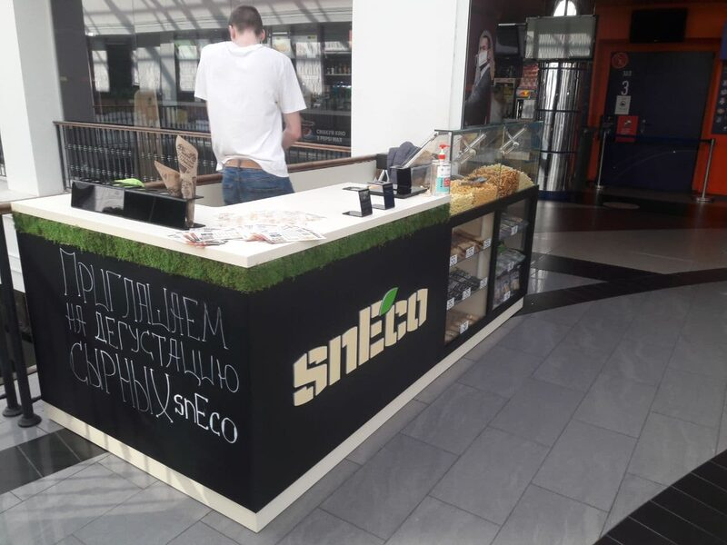

Хрусткий сир.
Лише сир.
Усе інше — інженерія.
Crunchy cheese.
Just cheese.
Everything else is engineering.
Ми не змішуємо сир із кукурудзою чи пшеницею. Не випікаємо. Не присмачуємо. Не покриваємо. Ми просто прибрали з нього воду — і отримали хрусткий сир, який не псується два роки, влазить у кишеню і голосно відповідає, коли його їси.We don't blend cheese with corn or wheat. We don't bake it. We don't season or coat it. We just removed the water — and ended up with crunchy cheese that keeps for two years, fits in a pocket, and speaks loudly when bitten into.
Усе, що зробила технологія — зняла зі звичайного сиру обмеження. Ті, без яких він століттями не міг існувати: холодильник, короткий термін, важка упаковка.All the technology did was lift the limits ordinary cheese had carried for centuries: refrigeration, a short shelf life, heavy packaging.Všetko, čo technológia urobila — zniesla z obyčajného syra obmedzenia. Tie, bez ktorých storočia nemohol existovať: chladnička, krátka trvanlivosť, ťažký obal.
Ми не вигадували новий продукт. Ми зробили старий — кращим.We didn't invent a new product. We made the old one better.Nevymysleli sme nový produkt. Urobili sme starý — lepším.
засновники snEco — Vadym and Pylyp Gryshyn,
founders of snEco
Один бренд.
Незмінний стиль.
One brand.
One consistent style.
Цей документ описує правила використання бренду snEco — від логотипу до голосу. Для команди, підрядників, агентств і партнерів. This document defines how the snEco brand is used — from logo to voice. For our team, contractors, agencies and partners.Tento dokument popisuje pravidlá použitia značky snEco — od loga po hlas. Pre tím, subdodávateľov, agentúry a partnerov.
Хто миWho we areKto sme
Архітектура брендуBrand architectureArchitektúra značky
Маркування: «Made in Ukraine».
Сертифікати: FSSC 22000 v6.0 📄, HACCP / ISO 22000 📄.
Регулятор: Держпродспоживслужба України. Plant: Mukachevo, Ukraine.
Origin label: "Made in Ukraine".
Certifications: FSSC 22000 v6.0 📄, HACCP / ISO 22000 📄.
Regulator: State Service for Food Safety (Ukraine).
Маркування: «Made in EU».
Сертифікати: IFS Food v8 📄, HACCP 📄, EU TRACES.
Регулятор: ÚVZ SR (Slovakia) + EU Reg. 1169/2011. Plant: Humenné, Slovakia.
Origin label: "Made in EU".
Certifications: IFS Food v8 📄, HACCP 📄, EU TRACES.
Regulator: Public Health Authority of Slovakia + EU Reg. 1169/2011.
Правила вживання назвNaming rulesPravidlá používania názvov
| КонтекстContextKontext | Що писатиUseČo písať | Не писатиAvoidNepoužívať |
|---|---|---|
| Маркетингова комунікаціяMarketing communicationMarketingová komunikácia | snEco | Sneco · SNECO · SnEco |
| Логотип / упаковка (графічна форма)Logo / pack (graphic form)Logo / obal (grafická forma) | SNÉCO | Інше нарисуванняOther letteringIné prevedenie |
| Юр-документи UA-ринкуLegal docs · UA marketPrávne dokumenty UA trhu | ТОВ «Прайм Снек» / Prime Snack LLC | snEco як юр-особаsnEco as legal entitysnEco ako právnická osoba |
| Юр-документи EU-ринкуLegal docs · EU marketPrávne dokumenty EU trhu | Sneco SK s.r.o. | snEco SK · SNECO SKsnEco SK · SNECO SKsnEco SK · SNECO SK |
| ТехнологіяTechnologyTechnológia | VacWave Bio Nutrition | «NASA-технологія»"NASA technology"„NASA technológia" |
Команда & орг-структураTeam & org structureTím & org. štruktúra
🏢 Орг-структура snEco UAsnEco UA org structureOrg-štruktúra snEco UA
🇸🇰 Sneco SK (Словаччина)Sneco SK (Slovakia)Sneco SK (Slovensko)
Співвласники (4)Co-owners (4)Spoluvlastníci (4)
Функціональні керівники (4)Functional leads (4)Funkční vedúci (4)
Виробничий персоналProduction teamVýrobný personál
📞 Ключові контактиKey contactsKľúčové kontakty
Як з'явився snEcoHow snEco came to beAko vznikol snEco
Ключові віхиKey milestonesKľúčové míľniky
🇺🇦 Як війна змінила всеHow the war changed everythingAko vojna všetko zmenila
До 24 лютого 2022 року snEco працював у Харкові: ~3 тонни продукції щомісяця, 35 співробітників, відкриття нового цеху і виходу на експорт у ЄС — через тиждень.Before 24 February 2022, snEco operated in Kharkiv: ~3 tonnes per month, 35 staff, with a new production line and EU export launch scheduled for the following week.Do 24. februára 2022 snEco pracoval v Charkove: ~3 tony produkcie mesačne, 35 zamestnancov, otvorenie novej dielne a vstup na export do EÚ — o týždeň.
У перші дні великої війни знищено виробництво, склади і домівки родин. 27 лютого 2022-го всі гроші з рахунків компанії — близько 500 000 грн — переказали на ЗСУ і фонд «Повернись живим».In the first days of the full-scale invasion, production, warehouses and family homes were destroyed. On 27 February 2022, the company transferred all its working capital — about UAH 500,000 — to the Ukrainian Armed Forces and the "Come Back Alive" foundation.
У квітні 2022 вдалося вивезти вціліле обладнання (8 вантажівок) з Харкова. Місце для перезапуску обрали в Мукачево — Закарпаття, 100 км від кордону з ЄС. Усе літо 2022 — інженерні роботи, ремонт під харчове виробництво. Підтримка прийшла через гранти EU4Business, GIZ, IOM (UN Migration), ЄБРР.In April 2022, the salvageable equipment was moved out of Kharkiv (8 trucks). The new home — Mukachevo, Zakarpattia, 100 km from the EU border. Summer 2022 was non-stop engineering and food-production retrofits. Support came via grants from EU4Business, GIZ, IOM (UN Migration) and the EBRD.V apríli 2022 sa podarilo vyviezť zachované zariadenia (8 nákladiakov) z Charkova. Miesto pre reštart bolo zvolené v Mukačeve — Zakarpatsko, 100 km od hranice s EÚ. Celé leto 2022 — inžinierske práce, rekonštrukcia pre potravinársku výrobu. Podpora prišla cez granty EU4Business, GIZ, IOM (UN Migration), EBOR.
У серпні 2022 виробництво перезапустили. Зі старої команди в 35 людей до Мукачева переїхали троє; решта команди — переважно внутрішньо переміщені особи, що так само втратили домівки і шукали нову.Production resumed in August 2022. Of the 35-person original team, three relocated to Mukachevo; the rest of today's team are mostly internally displaced people, who had also lost their homes and were looking for a new one.
Історія, як ми її розповідаємоThe story, the way we tell itPríbeh, ako ho rozprávame
Технологія VacWave Bio NutritionVacWave Bio Nutrition technologyTechnológia VacWave Bio Nutrition
snEco vs конкурентиsnEco vs competitorssnEco vs konkurenti
- 100% натуральний сир, один інгредієнт
- 100% natural cheese, single ingredient
- 100% prírodný syr, jedna ingrediencia
- Низькотемпературна сушка (36-38°C) — поживні речовини зберігаються
- Low-temp drying (36-38°C) — nutrients preserved
- Nízkoteplotné sušenie (36-38°C) — výživové látky sa zachovávajú
- Кулькова форма — finger food, без жирних рук
- Ball shape — true finger food, no greasy hands
- Guľová forma — finger food, bez mastných rúk
- До 60% протеїну, без цукру, без глютену
- Up to 60% protein, no sugar, gluten-free
- Až 60% bielkovín, bez cukru, bez gluténu
- KETO-friendly, виробництво на сонячній енергії
- KETO-friendly, solar-powered production
- KETO-friendly, výroba na solárnej energii
- Сир + кукурудза / пшениця + консерванти + барвники
- Cheese mixed with corn / wheat + preservatives + colorants
- Syr + kukurica / pšenica + konzervanty + farbivá
- Запікають або смажать — поживна цінність втрачається
- Baked or fried — nutritional value lost
- Pečú alebo smažia — výživová hodnota sa stráca
- Пласка форма — брудні руки від розтопленого жиру
- Flat shape — dirty fingers from melted fat
- Plochý tvar — špinavé ruky od roztopeného tuku
- Низький білок, цукор і глютен у складі
- Low protein, sugar and gluten in the recipe
- Nízke bielkoviny, cukor a glutén v zložení
- Не sustainable виробництво
- Not a sustainable production process
- Nie sustainable výroba
Чому snEco не канібалізує — а розширює категоріюWhy snEco doesn't cannibalize — it grows the categoryPrečo snEco nekanibalizuje — ale rozširuje kategóriu
Іменна карта конкурентівNamed competitor mapPomenovaná mapa konkurentov
| БрендBrandZnačka | РегіонRegionRegión | ФормаFormatForma | Ключові factоидиKey factsKľúčové factoidy | Як ми відрізняємосьHow we differAko sa odlišujeme |
|---|---|---|---|---|
| Whisps | USA | Пласкі чипсиFlat crispsPloché čipsy | Запечений сир. ~12 SKU. Лідер US-категорії cheese-snack.Baked cheese. ~12 SKUs. US category leader.Pečený syr. ~12 SKU. Líder US-kategórie cheese-snack. | У них високі температури (втрата нутрієнтів). У нас — 36-38°C і кулькова форма (finger food).They use high heat (nutrient loss). We use 36-38°C and a ball shape (finger food).U nich vysoké teploty (strata nutrientov). U nás — 36-38°C a guľová forma (finger food). |
| ParmCrisps | USA | Пласкі чипсиFlat crispsPloché čipsy | Випечений Parmesan + насіння / спеції. Висока ціна.Baked Parmesan + seeds / spices. High price.Pečený Parmesan + semienka / korenia. Vysoká cena. | Один інгредієнт vs мікс. Без додавання насіння й приправ.Single ingredient vs blend. No seeds or seasonings added.Jedna ingrediencia vs mix. Bez pridávania semienok a korenín. |
| Moon Cheese | USA | ШматочкиChunksKúsky | «Сушений сир» — кубики. Натхнені космічною їжею NASA."Dried cheese" — cubes. Inspired by NASA space food.„Sušený syr" — kocky. Inšpirované kozmickou stravou NASA. | Ми — кулькова форма (зручніше), власна патентована технологія, EU-виробництво.We use a ball shape (more convenient), our own patented tech, EU production.My — guľová forma (pohodlnejšie), vlastná patentovaná technológia, EÚ-výroba. |
| Cello | USA | Випечені «whisps»Baked "whisps"Pečené „whisps" | Whisps-категорія від виробника сиру Cello.Whisps-category from cheesemaker Cello.Whisps-kategória od výrobcu syra Cello. | Той самий контраст — пласке-випечене vs кулькова низькотемпературна сушка.Same contrast — flat-baked vs ball low-temp drying.Ten istý kontrast — ploché-pečené vs guľové nízkoteplotné sušenie. |
| HiPP / Crispy Cheese | EU | Дрібні чипсиSmall crispsDrobné čipsy | EU private-label, зазвичай більш масовий цінник.EU private-label, mass-tier pricing.EÚ private-label, zvyčajne masovejšia cena. | Premium позиціонування, SIAL Grand Prix, sustainable виробництво.Premium positioning, SIAL Grand Prix, sustainable production.Premium pozicionovanie, SIAL Grand Prix, sustainable výroba. |
| JustCheese / Local UA | UA | Чипси / шматочкиCrisps / chunksČipsy / kúsky | Локальні плеєри без сертифікації світового рівня.Local players without world-class certifications.Lokálni hráči bez certifikácie svetovej úrovne. | FSSC 22000 + IFS Food v8 + EU TRACES + FDA. Готові до експорту.FSSC 22000 + IFS Food v8 + EU TRACES + FDA. Export-ready.FSSC 22000 + IFS Food v8 + EU TRACES + FDA. Pripravené na export. |
Sustainability — частина продукту, а не маркетингуSustainability — built into the product, not bolted onSustainability — súčasť produktu, nie marketingu
Слогани, тези, ключові фактиSlogans, claims, key factsSlogany, tézy, kľúčové fakty
Головні слоганиHeadline slogansHlavné slogany
Бренд-есенція в одне реченняBrand essence — one lineEsencia značky v jednej vete
Бібліотека ключових твердженьKey claims libraryKnižnica kľúčových tvrdení
| КатегоріяCategoryKategória | Можна казатиYou can sayMožno povedať | ПідтвердженоBacked byPotvrdené |
|---|---|---|
| СкладIngredientsZloženie | 100% cheese · single ingredient · clean label | Сертифікати, ТУCertifications, TUCertifikáty, TÚ |
| БілокProteinBielkoviny | up to 60% protein · high protein | 📄 Eurofins lab tests |
| ЗберіганняShelf lifeSkladovanie | up to 24 months · no fridge needed · 0–30°C | Технічна специфікаціяTechnical specTechnická špecifikácia |
| ДієтиDietsDiéty | keto-friendly · gluten-free · no sugar · low carb | Етикетка, ТУLabel, TUEtiketa, TÚ |
| ІнноваціяInnovationInovácia | SIAL Innovation Grand Prix 2024 · 2200+ products · Paris | 📄 Award · 📄 Cert |
| ВизнанняRecognitionUznanie | Forbes Next 250 · Gulfood Innovation Awards 2025 shortlist | Forbes, Gulfood |
| ТехнологіяTechnologyTechnológia | VacWave Bio Nutrition · patented · microwave-vacuum drying at 36-38°C | 📄 Патент №139035Patent No. 139035Patent č. 139035 |
| SustainabilitySustainabilitySustainability | 100% renewable energy · solar-powered · Type I Ecolabel · ISO 14024 | 📄 Green Crane · 📄 EU PEF |
| ПоходженняOriginPôvod | Designed in Ukraine · Made in EU (SK) · Made in Ukraine (UA) | Юр-особи UA + SKUA + SK legal entitiesPrávnické osoby UA + SK |
| ЯкістьQualityKvalita | FSSC 22000 · IFS Food v8 · HACCP · ISO 22000 · EU TRACES · FDA | 📄 FSSC · 📄 HACCP · 📄 IFS · 📄 FDA |
| ЛояльністьLoyaltyLojalita | 76% online repeat purchases · +126% promo lift | Внутрішня аналітикаInternal analyticsInterná analytika |
| ЗростанняGrowthRast | ×25 in 6 years · doubling revenue every year | Внутрішні фінансові даніInternal financialsInterné finančné údaje |
| РинокMarketTrh | 94% expo visitors expressed admiration and demand | Власні дослідження на виставкахInternal expo surveysVlastný výskum na výstavách |
Чого НЕ кажемоWhat we DON'T sayČo NEhovoríme
Готові формули для каналівReady-made channel formulasPripravené formuly pre kanály
Сценарії використання продукту (HoReCa & B2B)Product usage scenarios (HoReCa & B2B)Scenáre použitia produktu (HoReCa & B2B)
- 1Самостійний снек / стартерStand-alone snack / starterSamostatný snack / starter — до пива, вина, кави. Замість горіхів і чипсів.with beer, wine, coffee. A replacement for nuts and chips.k pivu, vínu, káve. Namiesto orechov a čipsov.
- 2Інгредієнт супу або салатуSoup or salad ingredientIngrediencia polievky alebo šalátu — альтернатива сухарикам / крутонам. Тримає форму у вологому середовищі 10–15 хвилин.an alternative to croutons. Holds shape in moisture for 10–15 minutes.alternatíva ku sušienkam / krutónom. Drží tvar vo vlhkom prostredí 10–15 minút.
- 3Доповнення до напоївDrink pairingDoplnok k nápojom — пиво, вино, вермут, кава. Вже працюємо з виноробами та крафтовими броварнями.beer, wine, vermouth, coffee. Already working with winemakers and craft breweries.pivo, víno, vermút, káva. Už spolupracujeme s vinárstvami a craftovými pivovarmi.
- 4Bar / mini-bar — 28г-формат для готелів, авіаліній, аеропорт-лаунжів.the 28g format for hotels, airlines and airport lounges.28g formát pre hotely, aerolínie, letiskové salóniky.
- 5Ready-to-eat — як компонент у готових стравах, мікс-кітах, протеїнових коробках.a component in ready meals, mix kits and protein boxes.ako komponent v hotových jedlách, mix-kitoch, proteínových krabiciach.
Логотип, кольори, типографікаLogo, colors, typographyLogo, farby, typografia
🅻 ЛоготипLogoLogo
ВаріантиVariantsVarianty
Файли логотипу — системаLogo files — systemSúbory loga — systém
Логотип постачається у 4 варіантах × 3 форматах. Завжди використовуйте оригінальні файли — не перемальовуйте і не експортуйте з PowerPoint / Keynote. The logo ships in 4 variants × 3 formats. Always use the original files — never redraw or export from PowerPoint / Keynote.Logo sa dodáva v 4 variantoch × 3 formátoch. Vždy používajte originálne súbory — neprekresľujte a neexportujte z PowerPointu / Keynote.
| КодCodeKód | ПризначенняUseČo písať | ФайлиFilesSúbory |
|---|---|---|
| M | Основний на білому · повний колір (чорний + зелений листок)Primary on white · full color (black + green leaf)Hlavný na bielom · plná farba (čierny + zelený lístok) | SVG PDF AI |
| MB | Основний на чорному · виворітка (білий + зелений листок)Primary on black · reversed (white + green leaf)Hlavný na čiernom · negatív (biely + zelený lístok) | SVG PDF AI |
| B | Моно-чорний · для жовтого, світлих кольорових і ч/б друкуMono-black · for yellow, light color and B&W printMono-čierny · pre žltú, svetlé farebné a ČB tlač | SVG PDF AI |
| W | Моно-білий · для зеленого, фотографій і темних кольоровихMono-white · for green, photography and dark colorMono-biely · pre zelenú, fotografie a tmavé farebné | SVG PDF AI |
Охоронне полеClear spaceOchranné pole
Навколо логотипу завжди зберігається відступ, рівний ширині літери «c» у логотипі. У цій зоні не може знаходитись жоден сторонній елемент (зокрема — інші логотипи партнерів і ритейлу). A clear space equal to the width of the letter "c" in the logo must always surround the mark. No other elements (including partner or retailer logos) may sit inside this zone.Okolo loga sa vždy zachováva odstup rovný šírke písmena „c" v logu. V tejto zóne nesmie byť žiadny iný prvok (najmä — iné logá partnerov a maloobchodníkov).
Мінімальний розмірMinimum sizeMinimálna veľkosť
Avatar Mark — для соцмереж і фавіконівAvatar Mark — for social profiles and faviconsAvatar Mark — pre sociálne siete a favicony
Для квадратних контейнерів — фавіконів, аватарів соцмереж, app icon, watermark — використовуємо повний wordmark «snEco» у центрованому квадраті. У кольорових версіях беремо моно (без зеленого листка): B для світлих фонів, W для темних. Так бренд читається завжди — від 32px favicon до 1024px app icon. For square containers — favicons, social avatars, app icons, watermarks — use the full snEco wordmark centered in a square. In monochrome contexts (no green leaf): B on light surfaces, W on dark ones. The brand reads consistently — from 32px favicon all the way to 1024px app icon.
1. Wordmark на бренд-фонах1. Wordmark on brand surfaces1. Wordmark na brand-pozadí
2. Реальні розміри (preview 1:1)2. Actual sizes (1:1 preview)2. Reálne rozmery (preview 1:1)
3. Розміри по платформах3. Sizes by platform3. Veľkosti podľa platforiem
| ПлатформаPlatformPlatforma | РозмірSizeVeľkosť | ВерсіяVersionVerzia | ФонBackgroundPozadie |
|---|---|---|---|
| Instagram / Facebook avatar | 320 × 320 | B (mono-black) | ЖовтийYellowŽltý |
| LinkedIn company logo | 300 × 300 | B | БілийWhiteBiely |
| X / Twitter avatar | 400 × 400 | B | ЖовтийYellowŽltý |
| Apple Touch Icon | 180 × 180 | W (mono-white) | ЧорнийBlackČierny |
| Android Chrome | 192 × 192 · 512 × 512 | W | ЧорнийBlackČierny |
| Favicon | 32 × 32 · 16 × 16 | B | Білий або прозорийWhite or transparentBiely alebo priehľadný |
| OG image (link sharing) | 1200 × 630 | MB (повний з листком)(full with leaf)(plný s lístkom) + слоганsloganslogan | ЧорнийBlackČierny |
| Watermark на фотоon photona fotke | 5–8% ширини5–8% of width5–8% šírky | W | Білий 70% непрозоростіWhite 70% opacityBiela 70% nepriehľadnosť |
4. Правила центрування у квадраті4. Centering rules in a square4. Pravidlá centrovania v štvorci
5. Файли5. Files5. Súbory
ЗаборониDon'tsZákazy
🎨 КольориColorsFarby
Дозволені поєднанняAllowed combinationsPovolené kombinácie
Правила використанняUsage rulesPravidlá použitia
- Чорний фон + жовтий текст / логотип
- Black background + yellow text / logo
- Čierne pozadie + žltý text / logo
- Жовтий фон + чорний текст
- Yellow background + black text
- Žlté pozadie + čierny text
- Білий фон + чорний або зелений логотип
- White background + black or green logo
- Biele pozadie + čierne alebo zelené logo
- Жовтий як акцентний колір на нейтральному фоні
- Yellow as an accent on neutral surfaces
- Žltá ako akcentná farba na neutrálnom pozadí
- Чорно-білий варіант для документів і факсів
- Black & white version for documents and faxes
- Čierno-biela varianta pre dokumenty a faxy
- Будь-які кольори поза палітрою без погодження
- Any non-palette colors without approval
- Akékoľvek farby mimo palety bez schválenia
- Градієнти на логотипі або в основних блоках
- Gradients on the logo or core elements
- Gradienty na logu alebo v hlavných blokoch
- Жовтий + білий (низький контраст, нечитабельно)
- Yellow on white (low contrast, unreadable)
- Žltá + biela (nízky kontrast, nečitateľné)
- Зелений як основний фоновий колір
- Green as a dominant background color
- Zelená ako hlavná farba pozadia
- Напівпрозорий або «приглушений» логотип
- Translucent or muted logo treatment
- Polopriehľadné alebo „stlmené" logo
🔤 ТипографікаTypographyTypografia
brand/fonts/ у форматах WOFF2 (web) і TTF (fallback). Тих самих шрифтів дотримуйтесь у Figma, InDesign, Keynote і будь-яких production-матеріалах.
The guide renders in the actual brand fonts: Qanelas (10 weights + Italic) and HighVoltage Rough. Files live in brand/fonts/ as WOFF2 (web) and TTF (fallback). Use the same files in Figma, InDesign, Keynote and any production materials.
100% CHEESE
Нічого зайвого. Real cheese.
Nothing else.
Ієрархія текстуText hierarchyHierarchia textu
Tone of Voice
Характер брендуBrand characterCharakter značky
Приклади: правильно / неправильноRight vs wrongPríklady: správne / nesprávne
Чого не говоримоWords we don't useČo nehovoríme
Візуальний стильVisual styleVizuálny štýl
Що показуємо vs що не показуємоShow vs avoidČo ukazujeme vs čo neukazujeme
- Кульки великим планом — видно текстуру
- Close-ups of the balls — texture visible
- Guľôčky zblízka — vidno textúru
- Натуральне або студійне м'яке освітлення
- Natural or soft studio light
- Prirodzené alebo štúdiové mäkké osvetlenie
- Справжні руки, реальні люди (не моделі-статуї)
- Real hands, real people (not stiff models)
- Skutočné ruky, reálni ľudia (nie modely-sochy)
- Рух, динаміка — кульки «летять», розсипаються
- Motion — balls in flight, scattered
- Pohyb, dynamika — guľôčky „letia", sypú sa
- Сир у розрізі поруч із кульками (для HoReCa)
- Cheese cross-section next to balls (for HoReCa)
- Syr v reze vedľa guľôčok (pre HoReCa)
- Фото сертифікатів і нагород на нейтральному фоні
- Certifications and awards on neutral backgrounds
- Fotky certifikátov a ocenení na neutrálnom pozadí
- Надмірно насичені фільтри, «Instagram-тон»
- Heavy filters, the "Instagram look"
- Príliš nasýtené filtre, „Instagram-tón"
- Стокові фото людей і ситуацій
- Stock photography of people or situations
- Stockové fotky ľudí a situácií
- Конкуруючий продукт у кадрі
- Competing products in frame
- Konkurenčný produkt v zábere
- Видимі лого інших брендів
- Visible third-party logos
- Viditeľné logá iných značiek
- Низька якість, розмиті фото
- Low resolution or blurred shots
- Nízka kvalita, rozmazané fotky
- Постановочні «ідеальні» сім'ї
- Staged "perfect family" scenes
- Insceniranе „ideálne" rodiny
Технічні вимогиTechnical specsTechnické požiadavky
| ФорматFormatFormát | Мін. роздільністьMin resolutionMin. rozlíšenie | КолірColorFarba | ФайлFileSúbor |
|---|---|---|---|
| Друкована реклама (A3+)Print advertising (A3+)Tlačená reklama (A3+) | 300 dpi | CMYK | TIFF / EPS |
| Соцмережі / digitalSocial / digitalSociálne siete / digital | 72–150 dpi | sRGB | JPG / PNG / WebP |
| Упаковка (prepress)Packaging (prepress)Balenie (prepress) | 300+ dpi | CMYK + PANTONE | PDF/X-4 |
| ПрезентаціїPresentationsPrezentácie | 150 dpi | sRGB | PNG / JPG |
Digital & соцмережіDigital & socialDigital & social
Розміри контентуContent sizesVeľkosti obsahu
| ПлатформаPlatformPlatforma | ФорматFormatFormát | Розмір (px)Size (px)Veľkosť (px) | ВикористанняUseČo písať |
|---|---|---|---|
| КвадратSquareŠtvorec | 1080 × 1080 | Основний постMain feedHlavný príspevok | |
| ПортретPortraitPortrét | 1080 × 1350 | Продуктовий постProduct postProduktový príspevok | |
| Stories / Reels | 1080 × 1920 | Stories, Reels | |
| ОбкладинкаCoverObal / cover | 820 × 312 | Шапка профілюProfile headerHlavička profilu | |
| ПостPostPríspevok | 1200 × 630 | СтрічкаFeedLišta | |
| Пост з фотоPost with imagePríspevok s fotkou | 1200 × 628 | Корпоративний акаунтCompany pageFiremný účet | |
| ШапкаHeaderHlavička | 600px wide | Партнерські листиPartner emailsPartnerské listy |
Структура публікації в InstagramInstagram post structureŠtruktúra publikácie na Instagrame
Email-підпис (шаблон)Email signature (template)Email-podpis (šablóna)
Система упаковкиPackaging systemSystém obalov
Ієрархія інформаціїInformation hierarchyHierarchia informácií
Формати SKUSKU formatsFormáty SKU
Партнер бере наш базовий продукт (одну з 28 SKU) і отримує його у власному пакуванні: бренд, рецептура мікс / новий смак, вибрані мови, кастомні розміри пачки, особливі вимоги до сертифікації. Ми лишаємось виробником і утримуємо технологію — ви отримуєте продукт під своєю маркою. Запит: vg@sneco.ua. The partner takes our base product (one of 28 SKUs) and receives it in their own packaging: their brand, custom mix / new flavor, selected languages, bespoke pack sizes, specific certification requirements. We remain the producer and own the technology — you ship under your brand. Inquiry: vg@sneco.ua.
📦 Логістика · Retail Showbox 28 гLogistics · Retail Showbox 28 gLogistika · Retail Showbox 28 g
Підсумкова таблиця для байераSummary for the buyerSúhrnná tabuľka pre nákupcu
| ПараметрParameterParameter | ЗначенняValueHodnota |
|---|---|
| Розмір пачки (Д × Ш × В)Pack size (L × W × H)Rozmer balenia (D × Š × V) | 200 × 150 × 20 mm |
| Розмір шоубоксуShowbox sizeRozmer showboxu | 210 × 150 × 380 mm |
| Пачок у шоубоксіPacks per showboxVrecúšok v showboxe | 15 |
| Шоубоксів у ряду на палетіShowboxes per rowShowboxov v rade na palete | 16 |
| Рядів на палетіRows per palletRadov na palete | 8 |
| Шоубоксів на палетіShowboxes per palletShowboxov na palete | 128 |
| Пачок на палетіPacks per palletVrecúšok na palete | 1 920 |
| Розмір палетиPallet sizeRozmer palety | 1200 × 800 × 1850 mm |
| Вага палети бруттоPallet gross weightHmotnosť palety brutto | 120 kg |
| Палет у 20 ft контейнеріPallets in 20 ft containerPaliet v 20 ft kontajneri | 11 · 21 120 pcs |
| Палет у 40 ft контейнеріPallets in 40 ft containerPaliet v 40 ft kontajneri | 25 · 48 000 pcs |
| Палет у 20-тонній фуріPallets in 20 t truckPaliet v 20-tonovej fúre | 33 · 63 360 pcs |
📦 Пакування 90×160 мм · 14 / 20 гPack 90×160 mm · 14 / 20 gBalenie 90×160 mm · 14 / 20 g
🌍 Міжнародні версіїInternational versionsMedzinárodné verzie
FROM 100% [CHEESE] CHEESE» (з FROM) · бейдж HIGH PROTEIN (без числа) · бекграунд силует столиці країни сиру: Cheddar — Лондон, Gouda — голландське містечко з вітряком, Blue Royale — Париж.
EN variant: ribbon "FROM 100% [CHEESE] CHEESE" (with FROM) · badge HIGH PROTEIN (no number) · capital-silhouette background of the cheese-origin country: Cheddar — London, Gouda — a Dutch town with windmill, Blue Royale — Paris.
100% [CHEESE] CHEESE» (без FROM) · бейдж 15G PROTEIN in this pack (з конкретною кількістю — вимога FDA / consumer) · той самий голландський бекграунд як EN.
US variant: ribbon "100% [CHEESE] CHEESE" (no FROM) · badge 15G PROTEIN in this pack (explicit number — FDA / consumer expectation) · same Dutch background as EN.

{kind=link}
{kind=link}
{kind=link}
{kind=link}
100% [CHEESE] CHEESE» (без FROM) · бейдж з кількістю протеїну (12G для Cheddar, 15G для Gauda) · комплектується зворотною етикеткою 57×70 мм з юр.даними Sneco SK s.r.o. і 8-мовним перекладом.
SK variant: ribbon "100% [CHEESE] CHEESE" (no FROM) · badge with protein quantity (12G for Cheddar, 15G for Gauda) · ships with a 57×70 mm back label bearing Sneco SK s.r.o. legal data and 8-language translation.
Матриця ринок × SKUMarket × SKU matrixMatica trh × SKU
- «CRUNCY» замість «CRUNCHY» (відсутня H) — на Blue Royale EN, Cheddar SK, Gauda US, Gauda SK
- "CRUNCY" instead of "CRUNCHY" (missing H) — on Blue Royale EN, Cheddar SK, Gauda US, Gauda SK
- „CRUNCY" namiesto „CRUNCHY" (chýba H) — na Blue Royale EN, Cheddar SK, Gauda US, Gauda SK
- «CEDDAR» замість «CHEDDAR» (відсутня H) — на Cheddar SK
- "CEDDAR" instead of "CHEDDAR" (missing H) — on Cheddar SK
- „CEDDAR" namiesto „CHEDDAR" (chýba H) — na Cheddar SK
- «GAUDA» замість «GOUDA» — на US і SK варіантах. Стандартна англомовна форма — Gouda. Для словацького ринку «GAUDA» можливо допустимо (перевірити з місцевим маркетингом), але для US це не правильно — узгодити перед друком
- "GAUDA" instead of "GOUDA" — on US and SK variants. Standard English spelling is Gouda. May be acceptable for Slovak market (verify with local marketing), but should be Gouda for US — confirm before print
- „GAUDA" namiesto „GOUDA" — na US a SK variantoch. Štandardná anglická forma — Gouda. Pre slovenský trh „GAUDA" môže byť prípustné (overiť s lokálnym marketingom), ale pre US to nie je správne — schváliť pred tlačou
Фірмові носіїBrand collateralFiremné nosiče
Затверджені носіїApproved itemsSchválené nosiče
Специфікації для друкуPrint specsŠpecifikácie pre tlač
| НосійItemNosič | КолірColor modelFarba | DPI / LPI | ПриміткаNotePoznámka |
|---|---|---|---|
| ВізитівкаBusiness cardVizitka | CMYK + PANTONE | 300 dpi | Матовий ламінат або UV-вибірковийMatte lamination or spot UVMatný laminát alebo UV-bodový |
| БланкLetterheadHlavičkový papier | CMYK або ЧБCMYK or B&WCMYK alebo ČB | 300 dpi | A4, офсет або цифровий друкA4, offset or digitalA4, ofset alebo digitálna tlač |
| ПакетBagVrecko | CMYK + PANTONE 123 C | 150 lpi | Флексодрук або офсет, мат. ламінатFlexo or offset, matte laminationFlexotlač alebo ofset, matný laminát |
| СкотчTapeLepiaca páska | CMYK | 72–100 dpi | Флексодрук, обмежена палітраFlexo print, restricted paletteFlexotlač, obmedzená paleta |
| ТекстильApparelTextil | CMYK / DTG | 150+ dpi | Шовкодрук або термопереносScreen print or heat transferSieťotlač alebo termoprenos |
EU та глобальні ринкиEU & global marketsEU a globálne trhy
Мови на упаковці: UA + 8
Регулятор: Держпродспоживслужба України
Сертифікати: FSSC 22000 v6.0, HACCP / ISO 22000
Завод: Мукачево, Україна Origin label: "Made in Ukraine"
Languages on pack: UA + 8
Regulator: State Service for Food Safety (Ukraine)
Certifications: FSSC 22000 v6.0, HACCP / ISO 22000
Plant: Mukachevo, Ukraine
Регулятор: ÚVZ SR + EU Reg. 1169/2011
Сертифікати: IFS Food v8, HACCP, EU TRACES
Адреса: Humenné, Slovakia
ТМ: SK №266751, CZ №411165, PL Z.590834 Origin label: "Made in EU"
Regulator: Public Health Authority of SR + EU Reg. 1169/2011
Certifications: IFS Food v8, HACCP, EU TRACES
Address: Humenné, Slovakia
TM: SK №266751, CZ №411165, PL Z.590834
Активні та пріоритетні ринкиActive & priority marketsAktívne a prioritné trhy
Правила міжнародної комунікаціїInternational communication rulesPravidlá medzinárodnej komunikácie
- «Made in EU» замість «Made in Ukraine» на EU-матеріалах
- "Made in EU" instead of "Made in Ukraine" on EU materials
- „Made in EU" namiesto „Made in Ukraine" na EÚ-materiáloch
- Юр-адреса: Sneco SK s.r.o., Humenné, Slovakia
- Legal address: Sneco SK s.r.o., Humenné, Slovakia
- Právna adresa: Sneco SK s.r.o., Humenné, Slovensko
- SIAL Grand Prix як міжнародне визнання — у головному меседжі
- Lead with SIAL Grand Prix as international recognition
- SIAL Grand Prix ako medzinárodné uznanie — v hlavnom posolstve
- «Clean label», «single ingredient», «up to 60% protein»
- "Clean label", "single ingredient", "up to 60% protein"
- „Clean label", „single ingredient", „up to 60% protein"
- IFS Food v8 — вказувати у спілкуванні з EU-ритейлом
- Cite IFS Food v8 in conversations with EU retail
- IFS Food v8 — uvádzať v komunikácii s EÚ-maloobchodom
- Мова ринку на упаковці + англійська як основа
- Local-market language on pack + English as the base
- Jazyk trhu na obale + angličtina ako základ
- «Made in Ukraine» на EU-матеріалах (юридично некоректно для SK)
- "Made in Ukraine" on EU materials (legally incorrect for SK product)
- „Made in Ukraine" na EÚ-materiáloch (právne nekorektné pre SK)
- Мішати юр-дані двох ентітей на одному носії
- Mixing both legal entities on the same artwork
- Miešať právne údaje dvoch entít na jednom nosiči
- Буквальний переклад UA-фраз без локалізації
- Literal translation of UA copy without localization
- Doslovný preklad UA-fráz bez lokalizácie
- UA-сертифікати для EU-ринку (різні системи)
- UA certifications for the EU market (different systems)
- UA-certifikáty pre EÚ-trh (rôzne systémy)
Як ми говоримо зі світомHow we speak to the worldAko hovoríme so svetom
📰 Проактивні комунікації & PRProactive communications & PRProaktívne komunikácie & PR
ЗасновникиFoundersZakladatelia
Boilerplate «Про snEco»"About snEco" boilerplateBoilerplate „O snEco"
Три кути сторі для медіаThree story angles for mediaTri uhly príbehu pre médiá
Прес-контактPress contactPress-kontakt
Vadym Gryshyn · CEO, співзасновникCEO, co-founderCEO, spoluzakladateľ
📧 vg@sneco.ua
🌐 sneco.ua · sneco.eu
📍 Mukachevo, Ukraine · Humenné, Slovakia
Готові цитати на типові запитанняReady quotes for common questionsPripravené citáty na typické otázky
🚨 Кризові комунікаціїCrisis communicationsKrízová komunikácia
Принципи реакціїResponse principlesPrincípy reakcie
Сценарій 1: Скарга на якість продуктуScenario 1: Product quality complaintScenár 1: Sťažnosť na kvalitu produktu
0–3 години:0–3 hours:0–3 hodín: QA-менеджер запитує номер партії, фото, дату покупки. Без визнання провини на цьому етапі.QA manager asks for batch number, photo, purchase date. No admission of fault at this stage.QA-manažér žiada číslo šarže, fotografie, dátum nákupu. Bez priznania viny v tejto fáze.
3–24 години:3–24 hours:3–24 hodín: аналіз контр-зразка партії в лабораторії. Якщо підтверджено — підготовка до рекол партії.batch counter-sample analyzed in lab. If confirmed, prepare batch recall.analýza kontrolnej vzorky šarže v laboratóriu. Ak je potvrdené — príprava sťahovania šarže.
24–72 години:24–72 hours:24–72 hodín: офіційна відповідь споживачу. Заміна продукту або повернення коштів. Внутрішнє розслідування.official response to consumer. Replacement or refund. Internal investigation.oficiálna odpoveď spotrebiteľovi. Výmena produktu alebo vrátenie peňazí. Interné vyšetrovanie.
Готова відповідь споживачу (UA):Ready response to consumer (UA):Pripravená odpoveď spotrebiteľovi (UA):
Сценарій 2: Recall партіїScenario 2: Batch recallScenár 2: Recall šarže
Кроки:Steps:Kroky:
- CEO + Operations + QA + Legal — кризовий call протягом 1 години.CEO + Operations + QA + Legal — crisis call within 1 hour.CEO + Operations + QA + Legal — krízový call do 1 hodiny.
- Зупинка відвантажень партії. Лист дистриб'юторам із номерами партій і інструкцією.Halt shipments of the batch. Letter to distributors with batch numbers and instructions.Zastavenie dodávok šarže. List distribútorom s číslami šarží a inštrukciami.
- Інформування регулятора (Держпродспоживслужба для UA, ÚVZ SR для SK) у строки, передбачені законом.Notify the regulator (State Service for Food Safety in UA, ÚVZ SR in SK) within statutory deadlines.Informovanie regulátora (Deržprodspoživsluha pre UA, ÚVZ SR pre SK) v lehotách stanovených zákonom.
- Публічна заява, якщо партія потрапила до споживача. Прозорість ВИЩА за тимчасовий ризик репутації.Public statement if the batch reached consumers. Transparency BEATS short-term reputation risk.Verejné vyhlásenie, ak sa šarža dostala k spotrebiteľovi. Transparentnosť je VYŠŠIA ako dočasné riziko reputácie.
Шаблон публічної заяви:Public statement template:Šablóna verejného vyhlásenia:
Сценарій 3: Журналістський запит про війнуScenario 3: Journalist asking about the warScenár 3: Novinárska žiadosť o vojne
Готова відповідь:Ready answer:Pripravená odpoveď:
Сценарій 4: Хайп / помилка в SMMScenario 4: Social media hype / mistakeScenár 4: Hype / chyba v SMM
- Пост не видаляємо, якщо є ризик «Streisand effect». Натомість — публічне виправлення під ним.Don't delete the post if there's a Streisand-effect risk. Add a public correction beneath it instead.Príspevok nemažeme, ak je riziko „Streisand effect". Namiesto toho — verejná oprava pod ním.
- Якщо контент шкідливий чи травматичний — видаляємо з публічним поясненням, чому.If the content is harmful or traumatic, take it down with a public explanation of why.Ak je obsah škodlivý alebo traumatický — mažeme s verejným vysvetlením prečo.
- Без захисту і без виправдань. Просте «помилились — виправили — рухаємось далі».No defensiveness, no excuses. Simple: "we erred — fixed — moving on".Bez obrany a bez vyhováraním. Jednoducho „pomýlili sme sa — opravili sme — ideme ďalej".
Кризова команда — хто кому дзвонитьCrisis team — who calls whomKrízový tím — kto komu volá
Operations / Production: Pylyp Gryshyn
QA / Quality: Технічний директорTechnical directorTechnický riaditeľ
Legal: Зовнішній юрист (контакт у CRM)External counsel (contact in CRM)Externý právnik (kontakt v CRM)
PR / SMM: SMM-менеджер · резервний канал @snEcoSMM manager · backup channel @snEcoSMM-manažér · záložný kanál @snEco
Якщо CEO недоступний — speaker'ом тимчасово стає Pylyp Gryshyn. Жоден інший співробітник публічно не коментує до окремої вказівки.If the CEO is unavailable, Pylyp Gryshyn becomes the temporary spokesperson. No other employee may comment publicly until otherwise instructed.Ak je CEO nedostupný — speakerom dočasne stáva Pylyp Gryshyn. Žiaden iný zamestnanec verejne nekomentuje do samostatného pokynu.
Sales playbookSales playbookSales playbook
Shelf positioning · де ставимо пачкуShelf positioning · where the pack belongsShelf positioning · kde umiestňujeme balenie
маленька готова до споживання упаковкаsmall ready-to-eat unit
24 міс при 0–30 °C24 months at 0–30 °C
прикасова зона / on-the-gocheckout / on-the-go
як chips / nuts / crackers, не як сирlike chips / nuts / crackers, not cheese
пиво, вино, дорога, офіс, школа, HoReCabeer, wine, road, office, school, HoReCa
не конкуруємо з блоком сирівwe don't compete with the cheese aisle
snEco не продається як сирsnEco is not sold as cheese
не потребує холодильника — це ambient snackno refrigeration needed — it's ambient
«купити сир додому» — не наш покупець"buy cheese to take home" — not our shopper
Дерево запереченьObjection treeStrom námietok
Базові комерційні параметриCommercial baselineZákladné obchodné parametre
| ПараметрItemParameter | СтандартStandardŠtandard | КоментарNoteKomentár |
|---|---|---|
| MOQ первиннеinitialprimárne | 1 pallet (~1000 boxes) | Тестова відвантаженняTest shipmentTestovacia dodávka |
| MOQ повторнеrepeatopakované | 1 box (15 × 28g) | Гнучко для нішевого ритейлуFlexible for niche retailFlexibilne pre nišový retail |
| Lead time первиннийinitialprimárny | 4–6 weeks | З урахуванням маркуванняIncludes labelingS ohľadom na označenie |
| Lead time повторнийrepeatopakovaný | 2–3 weeks | — |
| Incoterms | FCA / CPT / DDP | DDP за окремим погодженнямDDP by separate agreementDDP po samostatnej dohode |
| Термін зберіганняShelf lifeTrvanlivosť | 24 months | 0–30°C, без холодильникаno refrigerationbez chladničky |
| Private Label | ✓ | MOQ і умови узгоджуються окремоMOQ and terms negotiated separatelyMOQ a podmienky sa dohadujú samostatne |
| Маркетингова підтримкаTrade marketingMarketingová podpora | Co-fundCo-fundCo-fund | Listing fee, промо, дегустації — за домовленістюListing fee, promo, tastings — by agreementListing fee, promo, ochutnávky — podľa dohody |
🔒 Прайс-листи · UA · 02.03.2026Price lists · UA · Mar 2, 2026Cenníky · UA · 02.03.2026
📦 Роздріб · 28 г · 8 SKU📦 Retail · 28 g · 8 SKUs📦 Maloobchod · 28 g · 8 SKU
📦 Малий формат · 14 / 20 г · 12 SKU📦 Small format · 14 / 20 g · 12 SKUs📦 Malý formát · 14 / 20 g · 12 SKU
📦 B2B / HoReCa · 500 г · 8 SKU📦 B2B / HoReCa · 500 g · 8 SKUs📦 B2B / HoReCa · 500 g · 8 SKU
Що sales-команда може запропонувати «з коробки»What sales can offer out of the boxČo môže sales-tím ponúknuť „z krabice"
Legal & substantiationLegal & substantiationLegal & substantiation
Substantiation map (claim → доказ)Substantiation map (claim → proof)Substantiation map (tvrdenie → dôkaz)
| Claim | ПідставаBackingZáklad | Де лежитьWhere it livesKde sa nachádza |
|---|---|---|
| high protein · 40%+ protein · up to 60% protein | Лабораторні тести Eurofins (≥40% білка усі сорти, до 60% Fitness/Superfood). EU 1924/2006: ≥20% енергії з білка — задовольняє вся лінійка.Eurofins lab reports (≥40% protein in all varieties, up to 60% in Fitness/Superfood). EU 1924/2006: ≥20% energy from protein — satisfied across the entire range.Laboratórne testy Eurofins (≥40% bielkovín všetky druhy, až 60% Fitness/Superfood). EU 1924/2006: ≥20% energie z bielkovín — spĺňa celá línia. | 📄 Cheddar profile · 📄 #1 📄 #2 📄 #3 📄 #4 |
| gluten-free | Аналіз на глютен <20 ppm (EU 828/2014)Gluten test <20 ppm (EU 828/2014)Analýza na glutén <20 ppm (EU 828/2014) | Лаб. сертифікат — за запитомLab cert — on requestLab. certifikát — na žiadosť |
| no preservatives / no additives | Технічні умови (ТУ): склад = «сир натуральний»Technical spec: ingredient = "natural cheese"Technické podmienky (TÚ): zloženie = „prírodný syr" | 📄 ТУ титульний |
| up to 24 months shelf life | Тести стабільності зберігання, специфікаціяStorage stability tests, specTesty stability skladovania, špecifikácia | Технологічна документація — за запитомProduction docs — on requestTechnologická dokumentácia — na žiadosť |
| VacWave Bio Nutrition | Патент №139035Patent No. 139035Patent č. 139035 | 📄 Patent UA 139035 |
| SIAL Grand Prix 2024 | Сертифікат журіJury certificateCertifikát poroty | 📄 Award · 📄 Certificate |
| FSSC 22000 / IFS Food v8 | Сертифікати акредитованих органівAccredited body certificatesCertifikáty akreditovaných orgánov | 📄 FSSC v6 EN 📄 UA · 📄 TÜV · 📄 HACCP/ISO 22000 EN 📄 UA · 📄 HACCP SK · 📄 IFS audit letter |
| 100% solar-powered | Акт встановлення сонячних панелей, лічильникSolar installation act, meter readingsAkt inštalácie solárnych panelov, merač | Виробничі звіти — за запитомProduction reports — on requestVýrobné správy — na žiadosť |
| 76% online repeat / 100% B2B reorder | Внутрішня e-commerce аналітика та дані ERPInternal e-commerce analytics & ERP dataInterná e-commerce analytika a dáta ERP | Sales dashboard — внутрішнєSales dashboard — internalSales dashboard — interné |
| ×25 in 6 years | Фінансова звітність 2018–2024Financial statements 2018–2024Finančné výkazy 2018–2024 | Внутрішнє — за запитомInternal — on requestInterné — na žiadosť |
| USA FDA Food Facility Registration | FFR номер 10618353146FFR number 10618353146FFR číslo 10618353146 | 📄 USA FDA cert |
| UA Ecolabel «Зелений журавлик» | ISO 14024 Type I, перший еко-снек в UAISO 14024 Type I, first eco-snack in UAISO 14024 Type I, prvý eko-snack v UA | 📄 Green Crane · 📄 EU PEF |
| CE Declaration · УКТЗЕД | CE-декларація обладнання · класифікація для митниціCE equipment declaration · customs classificationCE-vyhlásenie zariadenia · klasifikácia pre colnicu | 📄 CE · 📄 УКТЗЕД |
EU health claims — що дозволеноEU health claims — what's allowedEU health claims — čo je povolené
Алергени — обов'язкові попередженняAllergens — mandatory warningsAlergény — povinné upozornenia
Торговельна маркаTrademark statusOchranná známka
🇸🇰 SK №266751 📄
🇨🇿 CZ №411165 📄
🇵🇱 PL Z.590834 📄 (13.02.2026)(Feb 13, 2026)(13.02.2026)
Запит на визнання недійсним подано 12.06.2025, справа №000072423. Cancellation request filed Jun 12, 2025, case No. 000072423.Žiadosť o vyhlásenie neplatnosti podaná 12.06.2025, prípad č. 000072423.
Поки кейс відкритий — у комерційній комунікації для EU вживаємо «snEco®» лише на ринках, де ТМ зареєстрована (SK, CZ, PL, скоро EU). While the case is open, in EU commercial comms use "snEco®" only in jurisdictions where the TM is registered (SK, CZ, PL, soon EU).Kým je prípad otvorený — v obchodnej komunikácii pre EÚ používame „snEco®" len na trhoch, kde je OZ zaregistrovaná (SK, CZ, PL, čoskoro EÚ).
™ / ® — коли і де™ / ® — when and where™ / ® — kedy a kde
| КонтекстContextKontext | Що ставитиWhat to useČo dať |
|---|---|
| Ринок з зареєстрованою ТМ (UA, SK, CZ, PL)Market with registered TM (UA, SK, CZ, PL)Trh so zaregistrovanou OZ (UA, SK, CZ, PL) | snEco® — при першій згадці у документіat first mention in the documentpri prvej zmienke v dokumente |
| Ринок без реєстрації (US, JP, Middle East тощо)Market without registration (US, JP, Middle East etc.)Trh bez registrácie (US, JP, Middle East atď.) | snEco™ — при першій згадціat first mentionpri prvej zmienke |
| Соцмережі / неформальна комунікаціяSocial / informal commsSociálne siete / neformálna komunikácia | snEco — без позначкиno mark requiredbez označenia |
| Юридичні документиLegal documentsPrávne dokumenty | Завжди ® або ™ за реєстрацієюAlways ® or ™ as registeredVždy ® alebo ™ podľa registrácie |
NASA — як реагуємо в комунікаціїNASA — how we handle it in commsNASA — ako reagujeme v komunikácii
Словник: DO / CAREFUL / NEVERVocabulary: DO / CAREFUL / NEVERSlovník: DO / CAREFUL / NEVER
Слова, які бренд впевнено використовує; слова, які потребують обережності або підкріплення; і слова, які не вживаємо ніколи. Перевіряйте кожен claim перед публікацією. Words the brand uses confidently; words that need care or substantiation; and words we never use. Check every claim before publishing.Slová, ktoré značka sebavedome používa; slová, ktoré vyžadujú opatrnosť alebo podporu; a slová, ktoré nikdy nepoužívame. Skontrolujte každý claim pred publikovaním.
- 100% cheese
- single ingredient
- clean label
- patented technology
- VacWave Bio Nutrition
- high protein (вся лінійка — ≥40% білка за вагою → ≥20% енергії, відповідає EU 1924/2006)
- up to 60% protein (Fitness/Superfood)
- 40%+ protein (базові сорти)
- gluten-free (тест <20 ppm)
- no sugar · no preservatives · no additives
- up to 24 months shelf life
- no fridge needed
- solar-powered production
- SIAL Innovation Grand Prix 2024
- Made in EU / Made in Ukraine
- keto-friendly · low-carb
- healthy (в EU потребує підтвердження)
- natural (уточніть «100% cheese»)
- premium (тільки в комерційному контексті)
- NASA (тільки історичне посилання, не як ярлик технології)
- 100% reorder rate (уточніть: «among key B2B partners»)
- eco-friendly (краще «Type I Ecolabel certified»)
- sustainable (потребує конкретики — solar, packaging)
- artisanal / craft (не наш tone — ми food-tech)
- handmade (не правда — ми використовуємо технологію)
- революційний · revolutionary
- унікальний · unique
- інноваційний · innovative (показуємо інновацію через факти)
- лікує · cures · heals
- детокс · detox
- immune-boosting
- schoolboy weight loss · схуднення гарантоване
- NASA-технологія · NASA technology (своя VacWave)
- chemical-free (буквально брехня — все хімія)
- allergen-free (є молоко!)
- Ми раді запропонувати… · We're delighted to offer…
- передовий · cutting-edge
- магічний / dietary miracle
- гарантовано (юридичний ризик)
- безалергенний (юридичний ризик)
Co-branding & ліцензуванняCo-branding & licensingCo-branding & licencovanie
Карта точок контактуTouchpoint mapMapa kontaktných bodov
🛒 Ритейл і фізичні точкиRetail & physicalMaloobchod a fyzické body
| ТочкаTouchpointBod | СтандартStandardŠtandard | Хто відповідаєOwnerKto zodpovedá |
|---|---|---|
| Полиця у супермаркетіSupermarket shelfRegál v supermarkete | Showbox 28г × 15 шт. Лицьова сторона до покупця. Mountain-display якщо погоджено з ритейлером.Showbox 28g × 15. Face forward. Mountain display if approved with retailer.Showbox 28g × 15 ks. Predná strana k zákazníkovi. Mountain-display ak je dohodnuté s maloobchodníkom. | Sales / KAM |
| Shelf-talker / wobbler | Тільки фірмові кольори. Один claim + QR на сайт. Без перевантажених креативів.Brand colors only. One claim + QR to website. No cluttered creative.Iba firemné farby. Jeden claim + QR na webovú stránku. Bez preťažených kreatívov. | Trade marketing |
| Дегустаційна точкаTasting stationOchutnávkový bod | Промоутер у фірмовій футболці / худі / кепці. Сценарій: «100% сир, 1 інгредієнт. Спробуйте».Promoter in brand t-shirt / hoodie / cap. Script: "100% cheese, 1 ingredient. Try it."Promotér vo firemnom tričku / mikine / čiapke. Scenár: „100% syr, 1 ingrediencia. Skúste". | Trade marketing |
| Виставковий стендTrade-fair boothVýstavný stánok | Чорно-жовтий. Один key-claim над усім. Пробники в показових тарілках. SIAL Grand Prix значок завжди видно.Black + yellow. One key claim above all. Samples in display bowls. SIAL Grand Prix badge always visible.Čierno-žltý. Jeden key-claim nad všetkým. Vzorky na prezentačných tanieroch. SIAL Grand Prix odznak vždy viditeľný. | Marketing / Export |
| Подія / спонсорствоEvent / sponsorshipPodujatie / sponzoring | Якщо логотип менше 64px — використовуйте Avatar Mark. Без партнерських лого без погодження.If logo is smaller than 64px, use the Avatar Mark. No partner logos without approval.Ak je logo menšie ako 64px — používajte Avatar Mark. Bez partnerských log bez schválenia. | Marketing |
📱 Digital каналиDigital channelsDigital kanály
| ТочкаTouchpointBod | СтандартStandardŠtandard | Хто відповідаєOwnerKto zodpovedá |
|---|---|---|
| sneco.ua / sneco.eu | Hero — один key claim. Без авто-плеїв. Чорно-жовта домінанта. WCAG AA.Hero — one key claim. No autoplay. Black + yellow dominant. WCAG AA.Hero — jeden key claim. Bez auto-prehrávania. Čierno-žltá dominanta. WCAG AA. | Web / Marketing |
| Instagram (@sneco.ua) | 3–4 речення підпис. 5–10 хештегів. Лого або водяний знак на фото.3–4 sentence caption. 5–10 hashtags. Logo or watermark on photo.3–4 vety popis. 5–10 hashtagov. Logo alebo vodoznak na fotke. | SMM |
| Facebook · LinkedIn | B2B-тон на LinkedIn (фокус на партнерах, цифрах). Емоційний на Facebook.B2B tone on LinkedIn (focus on partners, numbers). Emotional on Facebook.B2B-tón na LinkedIn (fokus na partneroch, číslach). Emocionálny na Facebooku. | SMM / PR |
| Email (transactional) | Чорна шапка + жовта смужка + лого. Підпис із посадою і фото. SIAL-плашка внизу.Black header + yellow strip + logo. Signature with role and photo. SIAL badge in footer.Čierna hlavička + žltý prúžok + logo. Podpis s pozíciou a fotkou. SIAL-značka dole. | All |
| Email (B2B / outreach) | Persona-tailored з sales playbook. Pitch формула. Без шаблонів «We're delighted to».Persona-tailored from the sales playbook. Pitch formula. Never "We're delighted to".Persona-tailored zo sales playbooku. Pitch formula. Bez šablón „We're delighted to". | Sales / Export |
| QR на упаковці | Веде на sneco.ua або sneco.eu залежно від ринку. Не використовуємо UTM-засмічення.Goes to sneco.ua or sneco.eu depending on market. No UTM clutter.Vedie na sneco.ua alebo sneco.eu podľa trhu. Nepoužívame UTM-spam. | Web |
📦 Партнерська і операційна комунікаціяPartner & operationalPartnerská a operatívna komunikácia
| ТочкаTouchpointBod | СтандартStandardŠtandard | Хто відповідаєOwnerKto zodpovedá |
|---|---|---|
| Документ відвантаженняShipping documentDodací list | Логотип + юр-дані (Prime Snack LLC або Sneco SK s.r.o.) залежно від ринку.Logo + legal entity (Prime Snack LLC or Sneco SK s.r.o.) per market.Logo + právne údaje (Prime Snack LLC alebo Sneco SK s.r.o.) podľa trhu. | Operations |
| Сертифікат на рукиCertificate handoverCertifikát do rúk | PDF з печаткою. Передавати тільки актуальну версію (FSSC, IFS, HACCP).PDF with seal. Hand over only the current version (FSSC, IFS, HACCP).PDF s pečiatkou. Posielať iba aktuálnu verziu (FSSC, IFS, HACCP). | QA / Export |
| Прайс-листPrice listCenník | Брендований PDF. Дата у файлі. Окремий за каналом (B2B / гурт / ритейл).Branded PDF. Date in filename. Separate by channel (B2B / wholesale / retail).Brandovaný PDF. Dátum v súbore. Samostatný podľa kanála (B2B / veľkoobchod / maloobchod). | Sales |
| Презентація для байераBuyer deckPrezentácia pre nákupcu | Шаблон у фірмовому стилі. Перший слайд — SIAL Grand Prix. Структура з sales playbook.Branded template. First slide — SIAL Grand Prix. Structure per sales playbook.Šablóna vo firemnom štýle. Prvý slide — SIAL Grand Prix. Štruktúra zo sales playbooku. | Sales / Export |
| Рахунок-фактураInvoiceFaktúra | Брендований темплейт у фірмовому стилі. Реквізити юр-особи відповідного ринку.Branded template. Legal-entity details per market.Brandovaný template vo firemnom štýle. Údaje právnickej osoby príslušného trhu. | Finance |
👤 Людська комунікаціяHuman commsĽudská komunikácia
| ТочкаTouchpointBod | СтандартStandardŠtandard |
|---|---|
| Перший контакт із потенційним партнеромFirst contact with prospectPrvý kontakt s potenciálnym partnerom | Завжди представляємось як snEco / Prime Snack або Sneco SK залежно від ринку. Прикріплюємо коротку presentation і SIAL-сертифікат.Always introduce as snEco / Prime Snack or Sneco SK per market. Attach short presentation and SIAL certificate.Vždy sa predstavujeme ako snEco / Prime Snack alebo Sneco SK podľa trhu. Prikladáme krátku prezentáciu a SIAL-certifikát. |
| Дзвінок / ZoomCall / ZoomHovor / Zoom | Бренд-фон у Zoom. Команда у фірмовій атрибутиці на виставкових / ритейл-зустрічах.Brand background on Zoom. Team in branded apparel for trade-fair / retail meetings.Brand-pozadie v Zoom. Tím vo firemnej atribútike na výstavných / retail stretnutiach. |
| Підпис у месенджеріMessenger signaturePodpis v messengeri | «Vadym, snEco» — мінімально. Без емоджі-сміттярки."Vadym, snEco" — minimal. No emoji clutter.„Vadym, snEco" — minimálne. Bez emoji-spamu. |
| Голосове повідомленняVoice messageHlasová správa | Коротко, по справі. Не «привіт, як справи» з 2 хвилинами тиші.Short, on point. Not "hi, how are you" with two minutes of silence.Stručne, k veci. Nie „ahoj, ako sa máš" s 2 minútami ticha. |
Фірмова торгова точка snEcosnEco branded retail kioskFiremná predajňa snEco

L-подібний острів. Чорна основа, скло, мох, підсвічений логотип.L-shaped island. Black base, glass, moss, backlit logo.L-tvarový ostrov. Čierny základ, sklo, mach, podsvietené logo.
Габарити 2800 × 1300 × 2300 мм. Площа ~3,6 м² — оптимально під фуд-корт або прохідний коридор. Самостійний острів без пристосування до стін. Dimensions 2800 × 1300 × 2300 mm. Footprint ~3.6 m² — optimal for food court or main aisle. Free-standing island, no wall attachment required.
📅 Хронологія проєктуProject timelineChronológia projektu
🎨 Ключові елементи дизайнуKey design elementsKľúčové prvky dizajnu
📐 Технічне креслення (фінальний варіант)Final blueprintTechnický výkres (finálna verzia)
📸 Точка у роботі (липень 2021)Kiosk in operation (July 2021)Bod v prevádzke (júl 2021)
🗂 Ранні концепти (липень 2020) — що відкинулиEarly concepts (July 2020) — what we rejectedSkoré koncepty (júl 2020) — čo sme zavrhli
Концепт-варіант 1Concept variant 1Koncept-varianta 1
Концепт-варіант 2Concept variant 2Koncept-varianta 2
🎓 Уроки з проєкту — для майбутніх ТТLessons learned — for future kiosksLekcie z projektu — pre budúce predajné body
- Спочатку позиціонування, потім дизайн. Перші концепти провалилися бо рухалися за «cafe-feel»; коли дизайнер отримав чіткий бриф «food-tech snack, не кав'ярня» — все перебудувалося за 2 місяці.
- Positioning first, design second. Early concepts failed because they chased a "cafe feel"; once the designer got a sharp brief — "food-tech snack, not a cafe" — everything reset in two months.
- Najprv pozicionovanie, potom dizajn. Prvé koncepty zlyhali, lebo sa hýbali za „cafe-feel"; keď dizajnér dostal jasný brief „food-tech snack, nie kaviareň" — všetko sa prebudovalo za 2 mesiace.
- Скляна вітрина з насипом — найсильніший trigger. Купа сирних кульок за склом продає сама себе, без слогана.
- Glass bulk display is the strongest trigger. A heap of cheese balls behind glass sells itself — no slogan needed.
- Sklenená vitrína so sypaním — najsilnejší trigger. Hromada syrových guľôčok za sklom predáva sama seba, bez sloganu.
- Підсвічений логотип критичний. Увечері в ТРЦ темно і шумно. Тепле помаранчеве світло SNÉCO — beacon, який бачить пів-залу.
- Backlit logo is critical. Malls are dark and noisy in the evening. The warm orange SNÉCO glow is a beacon visible across half the floor.
- Podsvietené logo je kritické. Večer v TRC je tma a hluk. Teplé oranžové svetlo SNÉCO — beacon, ktorý vidí pol sály.
- Меловий простір ≠ дешево, ≠ непрофесійно. Дозволяє швидко змінювати меседж під сезон/промо/новинку без друку нових банерів.
- Chalk space ≠ cheap, ≠ unprofessional. Lets you swap the message instantly for season / promo / launch without printing banners.
- Kriedový priestor ≠ lacný, ≠ neprofesionálny. Umožňuje rýchlo meniť posolstvo podľa sezóny/promo/novinky bez tlače nových bannerov.
- Мох — простий хак на «еко». 80-міліметрова смужка сухого моху коштує копійки, тримається роками, і одразу комунікує природу/еко.
- Moss — a cheap "eco" hack. An 80-mm strip of preserved moss costs pennies, lasts years, and instantly communicates nature/eco.
- Mach — jednoduchý hack na „eko". 80-milimetrový pásik suchého machu stojí pár grošov, drží roky a okamžite komunikuje prírodu/eko.
- L-форма у ~3.6 м² — оптимум. Достатньо для вітрини + полиць + продавця, поміщається у фуд-корт-острівок.
- L-shape at ~3.6 m² — the sweet spot. Enough for display + shelves + staff, fits a food-court island slot.
- L-tvar v ~3,6 m² — optimum. Dostačuje pre vitrínu + police + predavača, zmestí sa do food-court-ostrova.
~/snEco/retail/concept-2020/).
📁 Project source files — blueprint PDF, CAD, mall lease, materials specs, electricals — on request from vg@sneco.ua. Project archive kept locally (~/snEco/retail/concept-2020/).
Сертифікати, нагороди, юридичні документиCertificates, awards, legal documentsCertifikáty, ocenenia, právne dokumenty
🇺🇦 snEco / Prime Snack LLC (Україна)snEco / Prime Snack LLC (Ukraine)snEco / Prime Snack LLC (Ukrajina)
Якість та безпека харчових продуктівFood safety & qualityKvalita a bezpečnosť potravín
Юридичні & інтелектуальна власністьLegal & IPPrávne & duševné vlastníctvo
Нагороди та визнанняAwards & recognitionOcenenia a uznania
Еко-сертифікатиEco certificationsEko-certifikáty
Експорт & реєстраціїExport & registrationsExport & registrácie
🇸🇰 Sneco SK s.r.o. (Словаччина)Sneco SK s.r.o. (Slovakia)Sneco SK s.r.o. (Slovensko)
Якість та безпекаQuality & safetyKvalita a bezpečnosť
Торговельні маркиTrademarksOchranné známky
Лабораторні дослідження (Eurofins)Laboratory tests (Eurofins)Laboratórne testy (Eurofins)
🔒 Конфіденційні документи (за запитом)Confidential documents (on request)Dôverné dokumenty (na žiadosť)
- Корпоративні документи — Статут, Виписка, Витяг з ЄДРПОУ, реквізити, протоколи.Corporate documents — Statute, registry excerpts, EDRPOU, banking details, meeting minutes.
- Фінансові звіти — баланси, ДПЗО, аудиторські висновки, рахунки.Financial statements — balance sheets, tax filings, audit reports, invoices.
- Контракти & партнерські угоди — NVC GmbH (DE), PrimeService (EE), угоди постачання.Contracts & partnership agreements — NVC GmbH (DE), PrimeService (EE), supply contracts.
- Дозволи регуляторів — RÚVZ Humenné, експлуатаційні дозволи, акти митного контролю.Regulator permits — RÚVZ Humenné decisions, operational permits, customs inspection records.
- Транспортні & логістичні документи — договори перевезень, специфікації обладнання.Transport & logistics — freight contracts, equipment specifications.
snEco у пресіsnEco in the presssnEco v tlači
🏆 SIAL Innovation Grand Prix 2024SIAL Innovation Grand Prix 2024SIAL Innovation Grand Prix 2024
| ВиданняOutletVydanie | ДатаDateDátum | ЗаголовокHeadlineNadpis | Lang | Link |
|---|---|---|---|---|
| Економічна правда | 18.10.2024 | Як українці створили суперфуд, що отримав престижну нагороду у ФранціїHow Ukrainians created a superfood that won a prestigious award in FranceAko Ukrajinci vytvorili superpotravinu, ktorá získala prestížne ocenenie vo Francúzsku | UA | ↗ |
| Horeca Online (FR) | 2024 | SIAL Innovation Awards prize-winners 2024 | EN | ↗ |
| Trademagazin (HU) | 2024 | SIAL Innovation Award winners 2024 | EN | ↗ |
| Dairy Global | 2024 | Ukraine dairy represented at SIAL Paris 2024 | EN | ↗ |
| SIAL Paris | 2024 | Prime Snack (snEco) — exhibitor profile | EN | ↗ |
| QFTP (Quality Food Trade) | 2024 | New Export Opportunities for Ukraine: Organic and Dairy Exporters at SIAL Paris 2024 | EN | ↗ |
🇺🇦 Релокація & resilience під час війниRelocation & wartime resilienceRelokácia & resilience počas vojny
| ВиданняOutletVydanie | ДатаDateDátum | ЗаголовокHeadlineNadpis | Lang | Link |
|---|---|---|---|---|
| mc.today | 16.07.2024 | «У наш цех був приліт. Бізнес тимчасово зупинився»: історія релокації snEco з Харкова"Our workshop was hit. The business stopped": the story of snEco's relocation from Kharkiv„Do našej dielne dopadla raketa. Biznis bol dočasne pozastavený": príbeh relokácie snEco z Charkova | UA | ↗ |
| mc.today (RU) | 2022 | Потратили 3 млн грн в поисках идеального вкуса сыра — предприниматели за год продали 2 млн сырных шариков | RU | ↗ |
| Дія.Бізнес | 13.03.2023 | Стійкі та незламні: сирні, натуральні, українські — смаколики snEcoResilient and unbreakable: cheesy, natural, Ukrainian — snEco snacksOdolné a nezlomné: syrové, prírodné, ukrajinské — pochutiny snEco | UA | ↗ |
| LifeInWar | 2023 | Сирна магія: як у Мукачеві харків'яни виготовляють унікальні снекиCheese magic: how Kharkiv natives make unique snacks in MukachevoSyrová mágia: ako Charkovčania v Mukačeve vyrábajú jedinečné snacky | UA | ↗ |
| IOM Ukraine (UN Migration) | 2023 | Not Just Surviving but Thriving: Innovations Help Business in Ukraine Stay Afloat During War | EN | ↗ |
| EU4Business | 2023 | Cheesy, Natural, Ukrainian: Yummy snEco Snacks | EN | ↗ |
| Мукачівська міськрадаMukachevo City CouncilMestská rada Mukačeva | 2022 | У Мукачеві почало працювати релоковане підприємство з ХарковаA relocated company from Kharkiv has started operating in MukachevoV Mukačeve začal fungovať relokovaný podnik z Charkova | UA | ↗ |
🧬 Технологія & інноваціяTechnology & innovationTechnológia & inovácia
| ВиданняOutletVydanie | ДатаDateDátum | ЗаголовокHeadlineNadpis | Lang | Link |
|---|---|---|---|---|
| ШоТам | 2023 | Технології NASA та закарпатське сонце: українці створили унікальний бренд snEcoNASA technology and Zakarpattia sun: Ukrainians built the unique snEco brandTechnológie NASA a zakarpatské slnko: Ukrajinci vytvorili jedinečnú značku snEco | UA | ↗ |
| ШоТам | 2023 | Харківська компанія snEco виготовляє снеки за технологією NASA (ВІДЕО)Kharkiv-based snEco makes snacks with NASA technology (VIDEO)Charkovská firma snEco vyrába snacky technológiou NASA (VIDEO) | UA | ↗ |
| ШоТам | 2023 | Єдині в Україні сирні кульки за технологією NASA: історія бізнесу братів з ХарковаUkraine's only cheese balls made with NASA technology: a Kharkiv brothers' business storyJediné na Ukrajine syrové guľôčky technológiou NASA: príbeh biznisu bratov z Charkova | UA | ↗ |
| ШоТам · YouTube | 2023 | Як харків'яни створили сирні снеки за технологією NASA: космічний бренд snEco (відео)How Kharkiv brothers built a NASA-technology cheese snack: cosmic brand snEco (video)Ako Charkovčania vytvorili syrové snacky technológiou NASA: kozmická značka snEco (video) | UA | ↗ |
| NEWFOOD | 30.07.2024 | Український бренд створює хрусткі снеки, що на 100% складаються з сируA Ukrainian brand makes crunchy snacks that are 100% cheeseUkrajinská značka vyrába chrumkavé snacky, ktoré sú 100% zo syra | UA | ↗ |
| BizAgro | 2023 | В Україні виробляють сирні снеки за технологією NASAUkraine produces cheese snacks using NASA technologyNa Ukrajine vyrábajú syrové snacky technológiou NASA | UA | ↗ |
| AgroPortal | 2023 | Сирні снеки за технологією NASA (multimedia)Cheese snacks using NASA technology (multimedia)Syrové snacky technológiou NASA (multimedia) | UA | ↗ |
🌍 Експорт & міжнародне визнанняExport & international recognitionExport & medzinárodné uznanie
| ВиданняOutletVydanie | ДатаDateDátum | ЗаголовокHeadlineNadpis | Lang | Link |
|---|---|---|---|---|
| export.gov.ua | 2024 | Innovative Triumph of snEco: From Cheese Snack to Global Recognition | EN | ↗ |
| export.gov.ua | 2024 | Українські сирні снеки виходять на ринок ШвеціїUkrainian cheese snacks enter the Swedish marketUkrajinské syrové snacky vstupujú na trh Švédska | UA | ↗ |
| export.gov.ua | 2024 | Українські компанії презентували інноваційні харчові продукти у Швеції (Export to Sweden 2.0)Ukrainian companies showcased innovative food products in Sweden (Export to Sweden 2.0)Ukrajinské firmy predstavili inovatívne potravinárske produkty vo Švédsku (Export to Sweden 2.0) | UA | ↗ |
| Gulfood 2025 | 2025 | snEco unique crunchy 100% cheese snacks — Gulfood 2025 product showcase | EN | ↗ |
| UFMA (Ukrainian Food Manufacturers Alliance) | 2024 | snEco — member profile | EN | ↗ |
🌱 Sustainability & ECOSustainability & ECOSustainability & ECO
| ВиданняOutletVydanie | ДатаDateDátum | ЗаголовокHeadlineNadpis | Lang | Link |
|---|---|---|---|---|
| Ecolabel Ukraine | 2024 | Екологічно сертифіковані сири сухі спінені ТМ snEco — щорічне нагляданняEco-certified dried puffed cheese TM snEco — annual surveillanceEkologicky certifikované syry suché spenené OZ snEco — ročný dohľad | UA | ↗ |
Як використовувати в комунікаціїHow to use in communicationsAko použiť v komunikácii
Стратегічний roadmapStrategic roadmapStrategický roadmap
Бренд-цілі по фазахBrand goals by phaseBrand-ciele podľa fáz
| Phase | Бренд-цільBrand goalBrand-cieľ | Як вимірятиHow we measureAko merať |
|---|---|---|
| I (2026) | Стати впізнаваним premium-снеком у EU specialty каналіBecome a recognized premium snack in EU specialtyStať sa rozpoznateľným premium-snackom v EÚ specialty kanáli | Aided awareness ≥15% серед target персон у DE/PLAided awareness ≥15% among target personas in DE/PLAided awareness ≥15% medzi target personami v DE/PL |
| II (2027) | Перейти зі specialty у mainstream EU retailCross from specialty into EU mainstream retailPrejsť zo specialty do mainstream EÚ retail | Лістинг у мінімум 2 mainstream EU мережахListed in at least 2 mainstream EU chainsListing v minimálne 2 mainstream EÚ sietiach |
| III (2028+) | Стати дефолтом субкатегорії «crunchy cheese»Become the default in the "crunchy cheese" sub-categoryStať sa defaultom subkategórie „crunchy cheese" | «crunchy cheese snack» = top-of-mind asscoiation з snEco в EU"crunchy cheese snack" = top-of-mind association with snEco in EU„crunchy cheese snack" = top-of-mind asociácia so snEco v EÚ |
Бренд-метрики, які відстежуємоBrand metrics we trackBrand-metriky, ktoré sledujeme
- • Aided / unaided awareness — раз на квартал, у ключових ринках — quarterly, in key markets— raz za štvrťrok, na kľúčových trhoch
- • Share of voice — проти Whisps / ParmCrisps / Moon Cheese — vs Whisps / ParmCrisps / Moon Cheese— vs Whisps / ParmCrisps / Moon Cheese
- • NPS — серед B2B-партнерів і D2C-споживачів — among B2B partners and D2C consumers— medzi B2B-partnermi a D2C-spotrebiteľmi
- • Earned media value — згадки у топ-50 food media — mentions in top-50 food media— zmienky v top-50 food media
- • Repeat purchase rate — D2C (target ≥76%) і B2B (target 100%) — D2C (target ≥76%) and B2B (target 100%)— D2C (target ≥76%) a B2B (target 100%)
- • Promo lift — стабільно ≥+100% — steadily ≥+100%— stabilne ≥+100%
- • SKU velocity — по сорту і ринку — by variety and market— podľa druhu a trhu
- • Розподіл retail vs B2B vs D2C — квартальний міноут — quarterly mix— štvrťročný minutos
Пропозиції командиTeam ideas & suggestionsNávrhy tímu
Підтримка документаDocument maintenanceÚdržba dokumentu
🔐 Розподіл доступуAccess managementDistribúcia prístupu
vg@sneco.ua і fg@abrisart.com.
Manage whitelists for protected sections (HR, Prices). Access restricted to founders: vg@sneco.ua and fg@abrisart.com.
✅ Brand compliance — чеклистBrand compliance checklistBrand compliance — checklist
Логотип і кольориLogo & colorsLogo a farby
Шрифти і текстType & textPísma a text
Контент і тонContent & toneObsah a tón
Для міжнародних матеріалівFor international assetsPre medzinárodné materiály
📜 Історія версійVersion historyHistória verzií
- 🌐 Плавучий перемикач мов у верхньому правому кутку. Додатково до перемикача в sidebar — фіксований UA / EN / SK завжди видимий справа зверху. Вибір мови синхронізований між обома перемикачами і зберігається в localStorage (наступний візит відкривається у вибраній мові).
- 🌐 Floating language switcher in the top-right corner. In addition to the sidebar switcher, a fixed UA / EN / SK toggle is always visible top-right. Language choice is synced across both switchers and stored in localStorage (next visit opens in the chosen language).
- 🌐 Plávajúci prepínač jazykov v pravom hornom rohu. Okrem prepínača v bočnom paneli — fixný UA / EN / SK je vždy viditeľný vpravo hore. Voľba jazyka je synchronizovaná medzi oboma prepínačami a uložená v localStorage (nasledujúca návšteva sa otvorí v zvolenom jazyku).
- Адаптивний дизайн: на мобільних — компактніший варіант, не накладається з burger-меню (зліва).
- Responsive design: on mobile — more compact variant, doesn't overlap with the burger menu (left).
- Responzívny dizajn: na mobile — kompaktnejší variant, neprekrýva sa s burger menu (vľavo).
- 🇸🇰 SK переклад — 100% покриття (Phase 2 завершено). Усі 1114 текстових span-ів тепер мають словацький варіант. Перекладено body content усіх секцій: Manifest, Story (вся хронологія + цитати), Technology, Voice (всі правила + приклади), Photography (Don'ts/Dos), Packaging (всі специфікації), International (всі ринки), External communications (4 кризові сценарії), Sales playbook (objections + commercial terms), Legal (substantiation map), Documents (всі сертифікати + descriptions), Retail kiosk (повний archive), Press coverage (26+ публікацій), Roadmap (фази), HR, Ideas, Maintenance.
- 🇸🇰 SK translation — 100% coverage (Phase 2 complete). All 1114 text spans now have Slovak version. Body content translated across all sections: Manifest, Story (full timeline + quotes), Technology, Voice (all rules + examples), Photography (Don'ts/Dos), Packaging (all specs), International (all markets), External communications (4 crisis scenarios), Sales playbook (objections + commercial terms), Legal (substantiation map), Documents (all certificates + descriptions), Retail kiosk (full archive), Press coverage (26+ publications), Roadmap (phases), HR, Ideas, Maintenance.
- 🇸🇰 SK preklad — 100% pokrytie (Fáza 2 dokončená). Všetkých 1114 textových span-ov má teraz slovenskú verziu. Preložený body content všetkých sekcií: Manifest, História (celá chronológia + citáty), Technológia, Hlas (všetky pravidlá + príklady), Fotografia (Don'ts/Dos), Balenie (všetky špecifikácie), Medzinárodný (všetky trhy), Externé komunikácie (4 krízové scenáre), Sales playbook (námietky + obchodné podmienky), Legal (substantiation map), Dokumenty (všetky certifikáty + popisy), Retail kiosk (kompletný archív), Press coverage (26+ publikácií), Roadmap (fázy), HR, Ideas, Maintenance.
- Нова персистентна правило (memory): усе нове, що створюється в Brand Bible, має одразу містити переклад на 3 мови (UA + EN + SK). SK fallback на UA — лише перехідне рішення для legacy секцій.
- New persistent rule (memory): all new content created in Brand Bible must include translation in 3 languages (UA + EN + SK) from the start. SK→UA fallback is only a transitional solution for legacy sections.
- Nové trvalé pravidlo (memory): všetok nový obsah vytváraný v Brand Bible musí od začiatku obsahovať preklad v 3 jazykoch (UA + EN + SK). SK→UA fallback je len prechodné riešenie pre legacy sekcie.
- 🇸🇰 Додана словацька мовна версія (Phase 1). Toggle SK поряд з UA/EN. Перекладено 131 елемент: 17 sidebar entries · 43 section eyebrows і titles · 71 body label (форми, фільтри, статуси, org-структура, контакти, статуси документів).
- 🇸🇰 Slovak language added (Phase 1). SK toggle next to UA/EN. 131 items translated: 17 sidebar · 43 section headings · 71 body labels (forms, filters, statuses, org chart, contacts, document statuses).
- 🇸🇰 Pridaná slovenčina (Fáza 1). Prepínač SK vedľa UA/EN. Preložených 131 prvkov: 17 položiek menu · 43 nadpisov sekcií · 71 textov UI (formuláre, filtre, stavy, org. štruktúra, kontakty).
- Graceful fallback: у SK режимі, де переклад відсутній, JS показує UA-варіант (бо SK ближче до UA). Жодна секція не залишається порожньою.
- Graceful fallback: in SK mode, where translation is missing, JS shows the UA variant (since SK is closer to UA). No section is empty.
- Plynulý fallback: v SK režime, kde chýba preklad, JS zobrazí UA verziu (SK je bližšie k UA). Žiadna sekcia nezostáva prázdna.
- Тримовні email-шаблони: кожен лист OTP містить пояснення UA + EN + SK одночасно. Subject:
Код доступу / Access code / Prístupový kód. - Trilingual email templates: each OTP email has UA + EN + SK side by side. Subject:
Код доступу / Access code / Prístupový kód. - Trojjazyčné šablóny emailov: každý OTP email obsahuje UA + EN + SK súčasne. Predmet:
Код доступу / Access code / Prístupový kód. - Phase 2 (наступна сесія): переклад деталей body всередині секцій (Manifest, Story, Voice, Photo, Packaging, Legal, Sales). Поки — UA fallback видно у SK.
- Phase 2 (next session): translation of body details (Manifest, Story, Voice, Photo, Packaging, Legal, Sales). For now — UA fallback shows in SK mode.
- Fáza 2 (ďalšia relácia): preklad podrobností sekcií (Manifest, História, Hlas, Foto, Obaly, Legal, Sales). Zatiaľ — v SK sa zobrazuje UA fallback.
- «Пропозиції» винесено в окрему sidebar-групу «💡 Колаборація» — раніше було у «Сервіс».
- "Ideas" moved to its own sidebar group "💡 Collaboration" — was in "Service".
- „Návrhy" presunuté do samostatnej sidebar-skupiny „💡 Spolupráca" — predtým bolo v „Servis".
- Розділ HR перейменовано: «HR — персонал, ЗП» → просто «HR» у sidebar, заголовку секції і admin UI.
- HR section renamed: "HR — personnel, payroll" → just "HR" in sidebar, section title and admin UI.
- Sekcia HR premenovaná: „HR — personál, mzdy" → jednoducho „HR" v sidebar, hlavičke sekcie a admin UI.
- Branded email-шаблони для всіх 3 типів листів (OTP-код, нова ідея, новий коментар): чорний header з логотипом snEco, beige/жовтий accent block з кодом, зелено-жовтий accent bar, footer з контактами і доменами.
- Branded email templates for all 3 email types (OTP code, new idea, new comment): black header with snEco logo, beige/yellow accent block with code, green-yellow accent bar, footer with contacts and domains.
- Brandované email-šablóny pre všetky 3 typy emailov (OTP-kód, nový nápad, nový komentár): čierny header s logom snEco, beige/žltý accent blok s kódom, zeleno-žltý accent bar, footer s kontaktmi a doménami.
- CORS fix: Worker тепер повертає
Access-Control-Allow-Origin: *— працює зbrand.sneco.ua,dreamcarua.github.ioі будь-яким origin'ом. Захист — через whitelist + JWT, не CORS. Max-age preflight зменшено з 86400 до 60 сек. - CORS fix: Worker now returns
Access-Control-Allow-Origin: *— works withbrand.sneco.ua,dreamcarua.github.ioand any origin. Protection — via whitelist + JWT, not CORS. Preflight max-age reduced from 86400 to 60 sec. - CORS fix: Worker teraz vracia Access-Control-Allow-Origin: * — funguje s brand.sneco.ua, dreamcarua.github.io a akýmkoľvek originom. Ochrana — cez whitelist + JWT, nie CORS. Preflight max-age znížený z 86400 na 60 sek.
- Виправлено JS:
applyLang()тепер очищає inline display (CSS rules контролюють видимість мови). Усі застарілі inlinedisplay: noneвід попередніх версій видаляються при init і при кожному UA/EN toggle. - Fixed JS:
applyLang()now clears inline display (CSS rules control language visibility). All stale inlinedisplay: nonefrom previous versions are removed on init and on every UA/EN toggle. - Opravený JS: applyLang() teraz čistí inline display (CSS pravidlá kontrolujú viditeľnosť jazyka). Všetky zastarané inline display: none z predchádzajúcich verzií sa odstraňujú pri init a pri každom UA/EN toggle.
- ⚠ Після оновлення Worker — потрібен
wrangler deployна твоєму Mac для активації CORS і нових email-шаблонів. - ⚠ After Worker updates — run
wrangler deployon your Mac to activate CORS and new email templates. - ⚠ Po aktualizácii Worker — potrebný wrangler deploy na vašom Mac pre aktiváciu CORS a nových email-šablón.
- 💡 Новий розділ «Пропозиції» у sidebar групі «Сервіс» — система тікетів/ідей для команди. Будь-хто може створити (ім'я+email), будь-хто коментує, файли (до 6, по 10 МБ) — приймаються. Адміни (vg/fg) позначають як «✓ зроблено» або повертають у роботу.
- 💡 New "Ideas" section in the "Service" sidebar group — a ticket/idea system for the team. Anyone can submit (name + email), anyone can comment, attachments (up to 6 × 10 MB) supported. Admins (vg/fg) mark as done or reopen.
- 💡 Nová sekcia „Návrhy" v sidebar skupine „Servis" — systém tiketov/nápadov pre tím. Ktokoľvek môže vytvoriť (meno+email), ktokoľvek komentuje, súbory (až 6, po 10 MB) — prijímajú sa. Adminovia (vg/fg) označujú ako „✓ hotovo" alebo vracajú do práce.
- Сортування — від нових до старих. Фільтр Відкриті / Зроблено / Усі. Кожен idea-card розгортається кліком: видно повний текст, коментарі, файли, форму нового коментаря.
- Newest-first sorting. Filter Open / Done / All. Each idea card expands on click: full text, comments, attachments, comment form.
- Triedenie — od nových po staré. Filter Otvorené / Hotové / Všetky. Každá idea-card sa rozbalí kliknutím: vidno plný text, komentáre, súbory, formulár nového komentára.
- Email-сповіщення через Resend: нова ідея → адмінам; новий коментар → адмінам + автору тікета.
- Email notifications via Resend: new idea → admins; new comment → admins + ticket author.
- Email-notifikácie cez Resend: nový nápad → adminom; nový komentár → adminom + autorovi tiketu.
- Backend: розширено sneco-auth Worker. D1 (SQL) для тікетів і коментарів, R2 (object storage) для файлів. Email — через існуючий Resend API key. Endpoints:
/api/ideas/list|get|create|comment|close|reopen,/api/ideas/upload,/files/<key>. - Backend: sneco-auth Worker extended. D1 (SQL) for ideas and comments, R2 (object storage) for files. Email — via existing Resend API key. Endpoints:
/api/ideas/list|get|create|comment|close|reopen,/api/ideas/upload,/files/<key>. - Backend: rozšírený sneco-auth Worker. D1 (SQL) pre tikety a komentáre, R2 (object storage) pre súbory. Email — cez existujúci Resend API key. Endpoints: /api/ideas/list|get|create|comment|close|reopen, /api/ideas/upload, /files/<key>.
- ⚠ Перед публікацією v2.27 потрібен setup-2: створити D1 db
sneco-bible, виконатиschema.sql, створити R2 bucketsneco-files, uncomment блоки у wrangler.toml, redeploy. Інструкція — у новому~/snEco/sneco-auth/setup-2.sh. - ⚠ Before publishing v2.27, run setup-2: create D1 db
sneco-bible, applyschema.sql, create R2 bucketsneco-files, uncomment blocks in wrangler.toml, redeploy. Instructions in the new~/snEco/sneco-auth/setup-2.sh. - ⚠ Pred publikovaním v2.27 potrebný setup-2: vytvoriť D1 db sneco-bible, spustiť schema.sql, vytvoriť R2 bucket sneco-files, odkomentovať bloky vo wrangler.toml, redeploy. Inštrukcie — v novom ~/snEco/sneco-auth/setup-2.sh.
- 🔐 Нова система паролів — OTP по email. Замість статичних паролів (sneco-hr-2026, sneco2026) — одноразові 6-значні коди, що приходять на email. Email має бути у whitelist відповідного розділу. Сесія діє 1 годину, потім треба перезайти.
- 🔐 New password system — email OTP. Instead of static passwords (sneco-hr-2026, sneco2026) — one-time 6-digit codes sent to email. Email must be on the whitelist for that section. Session valid 1 hour, then re-login required.
- 🔐 Nový systém hesiel — OTP cez email. Namiesto statických hesiel (sneco-hr-2026, sneco2026) — jednorazové 6-miestne kódy, ktoré prichádzajú na email. Email musí byť na whiteliste príslušnej sekcie. Relácia trvá 1 hodinu, potom je potrebné znovu sa prihlásiť.
- Перероблено: HR розділ + Прайс-листи у Sales playbook. Універсальний модуль
snAuth— тепер можна додавати нові захищені блоки. - Refactored: HR section + Price lists in Sales playbook. Universal
snAuthmodule — easy to add new protected blocks. - Prerobené: HR sekcia + Cenníky v Sales playbook. Univerzálny modul snAuth — teraz možno pridávať nové chránené bloky.
- Новий блок у Maintenance — «🔐 Розподіл доступу». Доступний лише засновникам (vg@sneco.ua, fg@abrisart.com). Дозволяє редагувати whitelist'и emails per block: додати/видалити людей з доступом до HR і Прайс-листів. Адміни завжди мають доступ за замовчуванням.
- New Maintenance block — "🔐 Access management". Available only to founders (vg@sneco.ua, fg@abrisart.com). Lets you edit per-block email whitelists: add/remove who can access HR and Prices. Admins always have access by default.
- Nový blok v Maintenance — „🔐 Rozdelenie prístupu". Dostupný len zakladateľom (vg@sneco.ua, fg@abrisart.com). Umožňuje upravovať whitelisty emailov per block: pridať/odstrániť ľudí s prístupom k HR a Cenníkom. Adminovia majú vždy prístup štandardne.
- Backend: Cloudflare Worker + KV + Resend для email. Код, конфіг і setup-інструкція — у
~/snEco/sneco-auth/(src/index.js,wrangler.toml,DEPLOY.md). JWT для сесій (HMAC-SHA256, 1 год TTL). CORS обмежено dreamcarua.github.io. - Backend: Cloudflare Worker + KV + Resend for email. Code, config and setup instructions in
~/snEco/sneco-auth/(src/index.js,wrangler.toml,DEPLOY.md). JWT sessions (HMAC-SHA256, 1h TTL). CORS restricted to dreamcarua.github.io. - Backend: Cloudflare Worker + KV + Resend pre email. Kód, konfig a setup-inštrukcie — v ~/snEco/sneco-auth/ (src/index.js, wrangler.toml, DEPLOY.md). JWT pre relácie (HMAC-SHA256, 1 hod TTL). CORS obmedzené na dreamcarua.github.io.
- Як це працює: 1) Юзер вводить email → 2) Worker перевіряє whitelist → 3) надсилає 6-значний код через Resend → 4) Юзер вводить код → 5) Worker видає JWT → 6) JWT зберігається у sessionStorage → 7) розблоковує контент. Закриття браузера → треба знов залогінитись.
- How it works: 1) User enters email → 2) Worker checks whitelist → 3) sends 6-digit code via Resend → 4) User enters code → 5) Worker issues JWT → 6) JWT in sessionStorage → 7) content unlocks. Close browser → must re-login.
- Ako to funguje: 1) Užívateľ zadá email → 2) Worker overí whitelist → 3) odošle 6-miestny kód cez Resend → 4) Užívateľ zadá kód → 5) Worker vydá JWT → 6) JWT sa uloží v sessionStorage → 7) odomkne obsah. Zatvorenie prehliadača → znovu sa prihlásiť.
- Перед публікацією v2.26 потрібно: deploy Worker (1-разовий setup, ~30 хв за DEPLOY.md), потім підставити URL Worker'а у
WORKER_URLу HTML. До цього моменту login-форми будуть показувати помилку «Send failed». - Before publishing v2.26: deploy the Worker (one-time setup, ~30 min via DEPLOY.md), then set the Worker URL as
WORKER_URLin HTML. Until then, login forms will show "Send failed". - Pred publikovaním v2.26 je potrebné: deploy Worker (jednorazový setup, ~30 min podľa DEPLOY.md), potom doplniť URL Worker do WORKER_URL v HTML. Dovtedy login-formuláre budú zobrazovať chybu „Send failed".
- Усі згадки документів — клікабельні. У Legal & substantiation (substantiation map і Trademarks) і Press kit substantion table, а також у Architecture cards (UA + EU юр. особи) текст про сертифікати, патент, ТМ, FDA, eco тепер є прямим лінком на відповідний PDF у
documents/. - All document mentions — now clickable. In Legal & substantiation (substantiation map and Trademarks) and the Press kit substantion table, plus the Architecture cards (UA + EU legal entities), references to certificates, patent, trademarks, FDA, eco now link directly to the corresponding PDF in
documents/. - Všetky zmienky dokumentov — klikateľné. V Legal & substantiation (substantiation map a Trademarks) a Press kit substantion table, a tiež v Architecture cards (UA + EÚ právnické osoby) text o certifikátoch, patente, OZ, FDA, eco je teraz priamym linkom na príslušný PDF v documents/.
- Patent UA 139035 · Trademark UA 230269 · TM SK/CZ/PL · FSSC 22000 (v6 EN+UA, TÜV) · HACCP/ISO 22000 (EN+UA) · HACCP SK · IFS audit · SIAL Award + Cert · Eurofins lab tests (5) · USA FDA · Зелений журавлик · EU PEF · CE Declaration · УКТЗЕД · ТУ — усі резолвлять у документ одним кліком.
- Patent UA 139035 · Trademark UA 230269 · TM SK/CZ/PL · FSSC 22000 (v6 EN+UA, TÜV) · HACCP/ISO 22000 (EN+UA) · HACCP SK · IFS audit · SIAL Award + Cert · Eurofins lab tests (5) · USA FDA · Green Crane · EU PEF · CE Declaration · UKTZED · TU — all open the document with one click.
- Patent UA 139035 · Trademark UA 230269 · TM SK/CZ/PL · FSSC 22000 (v6 EN+UA, TÜV) · HACCP/ISO 22000 (EN+UA) · HACCP SK · IFS audit · SIAL Award + Cert · Eurofins lab tests (5) · USA FDA · Zelený žeriav · EU PEF · CE Declaration · UKTZÚED · TÚ — všetky sa rozbalia do dokumentu jedným kliknutím.
- Стандарт на майбутнє: при будь-якій новій згадці назви сертифікату, патенту, нагороди, ТМ, lab test — обов'язково обгорнути в
<a href="documents/[категорія]/[файл].pdf" target="_blank">. Якщо файлу ще немає — додати «за запитом» замість «через CRM». - Going-forward standard: any new mention of a certificate, patent, award, trademark or lab test must be wrapped in
<a href="documents/[category]/[file].pdf" target="_blank">. If the file isn't published yet — write "on request" instead of "via CRM". - Štandard do budúcna: pri akejkoľvek novej zmienke názvu certifikátu, patentu, ocenenia, OZ, lab testu — povinne zabaliť do <a href="documents/[kategória]/[súbor].pdf" target="_blank">. Ak súbor ešte neexistuje — pridať „na žiadosť" namiesto „cez CRM".
- 🔒 Новий розділ HR — персонал і зарплати у новій sidebar-групі «Конфіденційне». Захищений паролем (SHA-256 hash, sessionStorage).
- 🔒 New HR — personnel & payroll section in a new "Confidential" sidebar group. Password-gated (SHA-256 hash, sessionStorage).
- 🔒 Nová sekcia HR — personál a mzdy v novej sidebar-skupine „Dôverné". Chránená heslom (SHA-256 hash, sessionStorage).
- Перший документ: «ЗП Виробництво» — щомісячна табличка зарплат (.xlsx). Опис процесу: щомісячно — лише верхня таблиця, формули затягують усе інше; від бухгалтерії — аванс/залишок вручну; години — автоматично з табелю; при виплаті — друк 2 однакових таблиць у альбомному форматі (відрізна для підпису + для працівника).
- First document: "Production payroll" — monthly worksheet (.xlsx). Process documentation: each month — only the top table is edited, formulas pull the rest; advance/final from accounting entered manually; hours computed automatically from the daily timesheet; on payday — print 2 identical tables in landscape (one for signature, one for the employee).
- Prvý dokument: „Mzdy Výroba" — mesačná tabuľka miezd (.xlsx). Popis procesu: mesačne — len horná tabuľka, vzorce vyplnia ostatné; z účtovníctva — preddavok/zostatok ručne; hodiny — automaticky z dochádzky; pri výplate — tlač 2 rovnakých tabuliek v krajinnom formáte (odtrhávacia na podpis + pre zamestnanca).
- ⚠ Security warning у HR-розділі: пароль у HTML — UI-бар'єр, а не реальний криптографічний захист. У публічному repo файли доступні через RAW URL без пароля. Sensitive файли — через захищені канали; у майбутньому — окремий приватний repo.
- ⚠ Security warning in HR section: HTML password is a UI gate, not real cryptographic protection. In a public repo, files are reachable via raw URLs without a password. Sensitive files — via secure channels; long-term — private repo.
- ⚠ Security warning v HR-sekcii: heslo v HTML — UI-bariéra, nie reálna kryptografická ochrana. Vo verejnom repo sú súbory dostupné cez RAW URL bez hesla. Sensitive súbory — cez chránené kanály; v budúcnosti — samostatný privátny repo.
- Повний реєстр контактів команди у секції «Команда & орг-структура» — імена, посади, мови, телефони, email, LinkedIn для всієї snEco SK команди + co-owners.
- Full team contact registry in the "Team & org structure" section — names, roles, languages, phones, emails, LinkedIn for the whole snEco SK team + co-owners.
- Plný register kontaktov tímu v sekcii „Tím & org-štruktúra" — mená, pozície, jazyky, telefóny, email, LinkedIn pre celý snEco SK tím + co-ownerov.
- Додано Iryna Petryshyna (Head of Export) у Sneco SK функціональні керівники — тепер 4 leads замість 3.
- Added Iryna Petryshyna (Head of Export) to Sneco SK functional leads — now 4 leads instead of 3.
- Pridaná Iryna Petryshyna (Head of Export) k Sneco SK funkčným vedúcim — teraz 4 leads namiesto 3.
- Кожна org-картка SK і co-owners тепер містить телефон і email прямо в meta. Виробничий персонал — телефони.
- Each SK and co-owner org card now shows phone and email in meta. Production operators — phone numbers.
- Každá org-karta SK a co-ownerov teraz obsahuje telefón a email priamo v meta. Výrobný personál — telefóny.
- Перебудовано «Ключові контакти» з короткої в повну таблицю на 10 осіб з усіма даними.
tel:іmailto:лінки — клікабельні. - Rebuilt "Key contacts" from a short list into a full 10-person table with all data.
tel:andmailto:links are clickable. - Prepracované „Kľúčové kontakty" z krátkej na plnú tabuľku 10 osôb so všetkými údajmi. tel: a mailto: linky — klikateľné.
- Додано блок «Загальні канали»:
sales@sneco.eu(SK/EU),worldwide@sneco.ua(експорт worldwide),vg@sneco.ua(стратегія/преса) + sneco.ua / sneco.eu. - Added "General channels" block:
sales@sneco.eu(SK/EU),worldwide@sneco.ua(export worldwide),vg@sneco.ua(strategy/press) + sneco.ua / sneco.eu. - Pridaný blok „Všeobecné kanály": sales@sneco.eu (SK/EÚ), worldwide@sneco.ua (export worldwide), vg@sneco.ua (stratégia/tlač) + sneco.ua / sneco.eu.
- Реструктуризовано «Експортна / EU версія» у повноцінний блок «🌍 Міжнародні версії» з 4 sub-категоріями: EN (3 SKU) · US (1) · SK (2) · SK back labels 57×70 мм (2). Загалом 8 нових/оновлених карток.
- Restructured "Export / EU version" into a full "🌍 International versions" block with 4 sub-categories: EN (3 SKUs) · US (1) · SK (2) · SK back labels 57×70 mm (2). 8 new/updated cards in total.
- Reštrukturalizované „Exportná / EÚ verzia" do plnohodnotného bloku „🌍 Medzinárodné verzie" so 4 sub-kategóriami: EN (3 SKU) · US (1) · SK (2) · SK back labels 57×70 mm (2). Celkovo 8 nových/aktualizovaných kariet.
- Додано Cheddar EN (London bg), Gauda US (15G PROTEIN), Cheddar SK (12G PROTEIN), Gauda SK (15G PROTEIN), Cheddar SK back-label, Gauda SK back-label.
- Added Cheddar EN (London bg), Gauda US (15G PROTEIN), Cheddar SK (12G PROTEIN), Gauda SK (15G PROTEIN), Cheddar SK back-label, Gauda SK back-label.
- Pridané Cheddar EN (London bg), Gauda US (15G PROTEIN), Cheddar SK (12G PROTEIN), Gauda SK (15G PROTEIN), Cheddar SK back-label, Gauda SK back-label.
- Документовано market-specific відмінності: ribbon «
FROM 100% [CHEESE]» на EN vs «100% [CHEESE]» на US/SK · бейджHIGH PROTEIN(EN) vs12G/15G PROTEIN in this pack(US/SK) · 8-мовна зворотна етикетка для SK ринку (Sneco SK s.r.o., Karpatska 1328/3, Kosice). - Documented market-specific differences: ribbon "
FROM 100% [CHEESE]" on EN vs "100% [CHEESE]" on US/SK · badgeHIGH PROTEIN(EN) vs12G/15G PROTEIN in this pack(US/SK) · 8-language back label for the SK market (Sneco SK s.r.o., Karpatska 1328/3, Kosice). - Zdokumentované market-specific rozdiely: ribbon „FROM 100% [CHEESE]" na EN vs „100% [CHEESE]" na US/SK · odznak HIGH PROTEIN (EN) vs 12G/15G PROTEIN in this pack (US/SK) · 8-jazyčná zadná etiketa pre SK trh (Sneco SK s.r.o., Karpatska 1328/3, Kosice).
- Додано матрицю ринок × SKU: 8 рядків × 5 стовпців (UA / EN / US / SK / SK back) — швидкий visual для розуміння де якого SKU нема.
- Added market × SKU matrix: 8 rows × 5 columns (UA / EN / US / SK / SK back) — quick visual gap-finder.
- Pridaná matica trh × SKU: 8 riadkov × 5 stĺpcov (UA / EN / US / SK / SK back) — rýchly visual pre pochopenie, kde aké SKU chýba.
- ⚠ Знайдено 3 типи друкарських помилок: «CRUNCY» (без H) на 4 файлах · «CEDDAR» (без H) на Cheddar SK · «GAUDA» (А замість O) на US/SK. Підсвічено окремим warning-блоком — виправити перед тиражем.
- ⚠ 3 types of typos found: "CRUNCY" (no H) on 4 files · "CEDDAR" (no H) on Cheddar SK · "GAUDA" (A instead of O) on US/SK. Flagged in a dedicated warning block — fix before press run.
- ⚠ Nájdené 3 typy tlačových chýb: „CRUNCY" (bez H) na 4 súboroch · „CEDDAR" (bez H) na Cheddar SK · „GAUDA" (A namiesto O) na US/SK. Zvýraznené samostatným warning-blokom — opraviť pred tlačou.
- Файлова структура розширена:
packaging/print/EN-28g/,US-90x160/,SK-90x160/,SK-57x70/(нові 4 папки замість 1). - File structure expanded:
packaging/print/EN-28g/,US-90x160/,SK-90x160/,SK-57x70/(4 new folders instead of 1). - Súborová štruktúra rozšírená: packaging/print/EN-28g/, US-90x160/, SK-90x160/, SK-57x70/ (nové 4 priečinky namiesto 1).
- Усього в галереї: 20 PDF (12 UA + 3 EN + 1 US + 2 SK + 2 SK-back), 20 JPG превью (~1.7 MB разом).
- Gallery total: 20 PDFs (12 UA + 3 EN + 1 US + 2 SK + 2 SK-back), 20 JPG previews (~1.7 MB combined).
- Celkovo v galérii: 20 PDF (12 UA + 3 EN + 1 US + 2 SK + 2 SK-back), 20 JPG preview (~1.7 MB spolu).
- Новий розділ «Фірмова торгова точка» у sidebar (між «Точки контакту» і «Документи»). Архів проєкту 2020-2021 — точка у ТРЦ «Французький бульвар» (Київ).
- New "Branded retail kiosk" section in the sidebar (between "Touchpoints" and "Documents"). Project archive 2020-2021 — kiosk at Frantsuzkyi Bulvar Mall (Kyiv).
- Nová sekcia „Firemný predajný bod" v sidebar (medzi „Kontaktné body" a „Dokumenty"). Archív projektu 2020-2021 — bod v TRC „Francúzsky bulvár" (Kyjev).
- Хронологія проєкту (4 milestones): концепти 1-2 (07.2020) → фінальний техпроєкт (09.2020) → монтаж (30.09 → 01.10.2020) → ~9 місяців роботи (07.2021).
- Project timeline (4 milestones): concepts 1-2 (Jul 2020) → final blueprint (Sep 2020) → install (30 Sep → 1 Oct 2020) → ~9 months in operation (Jul 2021).
- Chronológia projektu (4 milestones): koncepty 1-2 (07.2020) → finálny technický projekt (09.2020) → inštalácia (30.09 → 01.10.2020) → ~9 mesiacov prevádzky (07.2021).
- 6 ключових елементів дизайну: чорна основа з мел.фарбою · підсвічений LED-логотип · декоративний мох (80мм) · скляна вітрина з насипом · нахилені полиці упаковок · меловий простір для меседжів.
- 6 key design elements: black chalk-paint body · backlit LED logo · decorative moss (80 mm) · glass bulk display · tilted pack shelves · chalk-message space.
- 6 kľúčových prvkov dizajnu: čierny základ s kriedovou farbou · podsvietené LED-logo · dekoratívny mach (80 mm) · sklenená vitrína so sypaním · sklonené police s baleniami · kriedový priestor pre posolstvá.
- Технічне креслення (фінал) + 4 реальні фото з ТРЦ + 8 ранніх концептів (рендерів) як «як НЕ треба».
- Final blueprint + 4 real mall photos + 8 early concept renders as a "how-not-to" reference.
- Technický výkres (finál) + 4 skutočné fotky z TRC + 8 skorých konceptov (renderov) ako „ako NETREBA".
- 7 «уроків з проєкту» для майбутніх ТТ і франчайзі: спочатку позиціонування, скляна вітрина — найсильніший trigger, підсвічений лого критичний у ТРЦ, мох як «еко»-хак, L-форма ~3.6 м² — оптимум.
- 7 "lessons learned" for future kiosks and franchisees: positioning first, glass bulk display is the strongest trigger, backlit logo is critical, moss as an "eco hack", L-shape ~3.6 m² is the sweet spot.
- 7 „lekcií z projektu" pre budúce predajné body a franchisingy: najprv pozicionovanie, sklenená vitrína — najsilnejší trigger, podsvietené logo kritické v TRC, mach ako „eko"-hack, L-forma ~3,6 m² — optimum.
- 14 веб-оптимізованих JPG у
retail/concept-2020/(~1.3 MB разом). Сирці CAD/PDF — за запитом. - 14 web-optimized JPGs in
retail/concept-2020/(~1.3 MB total). CAD/PDF sources on request. - 14 web-optimalizovaných JPG v retail/concept-2020/ (~1.3 MB spolu). Zdroje CAD/PDF — na žiadosť.
- Sneco SK команда розгорнута у секції «Команда & орг-структура»: 4 співвласники + 3 функціональні керівники + 2 виробничі оператори (всього 9 осіб). Кожна картка містить посаду, зону відповідальності і мовні навички.
- Sneco SK team expanded in the "Team & org structure" section: 4 co-owners + 3 functional leads + 2 production operators (9 people total). Each card includes title, area of responsibility and language skills.
- Sneco SK tím rozvinutý v sekcii „Tím & org-štruktúra": 4 spoluvlastníci + 3 funkční vedúci + 2 výrobní operátori (celkovo 9 osôb). Každá karta obsahuje pozíciu, oblasť zodpovednosti a jazykové znalosti.
- 🔒 Прибрано частки власності зі Sneco SK блоку (раніше: Andrela 37.5%, Gryshyn 25%, Gryshyn 25%, Levko 12.5%). Конфіденційні дані не місце у публічному Brand Bible — лишилися лише у внутрішньому memory.
- 🔒 Ownership percentages removed from the Sneco SK block (previously: Andrela 37.5%, Gryshyn 25%, Gryshyn 25%, Levko 12.5%). Confidential data doesn't belong in a public Brand Bible — kept only in internal memory.
- 🔒 Odstránené podiely vlastníctva zo Sneco SK bloku (predtým: Andrela 37,5%, Gryshyn 25%, Gryshyn 25%, Levko 12,5%). Dôverné údaje nepatria do verejnej Brand Bible — zostali len v internom memory.
- Додано повні імена раніше неповних: Serhii Andrela (CCO) і Taras Levko (CFO/BDO).
- Added full names where previously partial: Serhii Andrela (CCO) and Taras Levko (CFO/BDO).
- Pridané plné mená predtým neúplných: Serhii Andrela (CCO) a Taras Levko (CFO/BDO).
- Нові імена в команді: Alona Zheliznyk (Head of Sales), Patrik Syvij (Operations & Warehouse), Maksym Nesterenko (Production & Quality), Yuliia Nesterenko + Nataliia Anufriieva (Production Operators).
- New team members: Alona Zheliznyk (Head of Sales), Patrik Syvij (Operations & Warehouse), Maksym Nesterenko (Production & Quality), Yuliia Nesterenko + Nataliia Anufriieva (Production Operators).
- Nové mená v tíme: Alona Zheliznyk (Head of Sales), Patrik Syvij (Operations & Warehouse), Maksym Nesterenko (Production & Quality), Yuliia Nesterenko + Nataliia Anufriieva (Production Operators).
- Експортна / EU версія пакування (англомовна) — нова, 4-та категорія в галереї пакування. Поки 2 SKU: Blue Royale (14 г) і Gouda (28 г).
- Export / EU packaging version (English) — new 4th category in the packaging gallery. Currently 2 SKUs: Blue Royale (14 g) and Gouda (28 g).
- Exportná / EÚ verzia balenia (anglická) — nová, 4. kategória v galérii balenia. Zatiaľ 2 SKU: Blue Royale (14 g) a Gouda (28 g).
- Описано відмінності від UA-версії: KETO + HIGH PROTEIN + RENEWABLE ENERGY бейджі, beige-ribbon «FROM 100% [CHEESE]», прапор/силует столиці країни сиру (Париж/Голландія), вага в OZ.+g, slogan «TASTE THE CRUNCH OF THE WORLD!».
- Documented differences vs. UA version: KETO + HIGH PROTEIN + RENEWABLE ENERGY badges, beige ribbon "FROM 100% [CHEESE]", flag/silhouette of the cheese-origin country (Paris / Dutch town), weight in OZ.+g, slogan "TASTE THE CRUNCH OF THE WORLD!".
- Popísané rozdiely od UA-verzie: KETO + HIGH PROTEIN + RENEWABLE ENERGY odznaky, beige-ribbon „FROM 100% [CHEESE]", vlajka/silueta hlavného mesta krajiny syra (Paríž/Holandsko), hmotnosť v OZ.+g, slogan „TASTE THE CRUNCH OF THE WORLD!".
- ⚠ Знайдено друкарську помилку у Blue Royale ENG: «CRUNCY CHEESE BITES» → правильно CRUNCHY (як на Gouda ENG). Виправити перед тиражем.
- ⚠ Typo found in Blue Royale ENG: "CRUNCY CHEESE BITES" → correct CRUNCHY (as on Gouda ENG). Fix before press run.
- ⚠ Nájdená tlačová chyba na Blue Royale ENG: „CRUNCY CHEESE BITES" → správne CRUNCHY (ako na Gouda ENG). Opraviť pred tlačou.
- Файлова структура:
packaging/print/EN-28g/для друкарських PDF,packaging/small/preview/SNECO_*_ENG.jpgдля веб-превью. - File structure:
packaging/print/EN-28g/for print PDFs,packaging/small/preview/SNECO_*_ENG.jpgfor web previews. - Súborová štruktúra: packaging/print/EN-28g/ pre tlačové PDF, packaging/small/preview/SNECO_*_ENG.jpg pre web-preview.
- Додано список «в розробці» для решти 5 ENG-SKU (Cheddar, Mozzarella, Primaggio, Smoked Suluguni, Crispy Olives).
- Added "in development" list for the remaining 5 ENG SKUs (Cheddar, Mozzarella, Primaggio, Smoked Suluguni, Crispy Olives).
- Pridaný zoznam „vo vývoji" pre zvyšných 5 ENG-SKU (Cheddar, Mozzarella, Primaggio, Smoked Suluguni, Crispy Olives).
- Виправлено застарілий заголовок:
Brand Bible v2.10 → v2.19у footer і header (changelog уже був на v2.18). - Fixed stale label:
Brand Bible v2.10 → v2.19in footer and header (changelog was already at v2.18). - Opravená zastaraná hlavička: Brand Bible v2.10 → v2.19 vo footer a header (changelog už bol na v2.18).
- Логістична карта Retail Showbox 28 г — повна спека для байерів і дистриб'юторів. Pack 200×150×20 мм / Showbox 210×150×380 мм / Pallet EUR 1200×800×1850 (128 boxes / 1920 pcs / 120 kg).
- Retail Showbox 28 g logistics card — full spec for buyers and distributors. Pack 200×150×20 mm / Showbox 210×150×380 mm / EUR Pallet 1200×800×1850 (128 boxes / 1920 pcs / 120 kg).
- Logistická mapa Retail Showbox 28 g — plná špecifikácia pre nákupcov a distribútorov. Pack 200×150×20 mm / Showbox 210×150×380 mm / Pallet EUR 1200×800×1850 (128 boxes / 1920 ks / 120 kg).
- Додано опції контейнерної логістики: 20 ft = 11 палет / 21 120 pcs · 40 ft = 25 палет / 48 000 pcs · Truck 20 т = 33 палети / 63 360 pcs.
- Added container logistics options: 20 ft = 11 pallets / 21,120 pcs · 40 ft = 25 pallets / 48,000 pcs · 20 t Truck = 33 pallets / 63,360 pcs.
- Pridané možnosti kontajnerovej logistiky: 20 ft = 11 paliet / 21 120 ks · 40 ft = 25 paliet / 48 000 ks · Truck 20 t = 33 paliet / 63 360 ks.
- Візуальний chain «Pack → Showbox → Pallet → Container» (auto-fit grid) + повна підсумкова таблиця для копіпасту в комерційні пропозиції.
- Visual chain "Pack → Showbox → Pallet → Container" (auto-fit grid) + full summary table for copy-pasting into commercial proposals.
- Vizuálny chain „Pack → Showbox → Pallet → Container" (auto-fit grid) + plná súhrnná tabuľka na kopírovanie do obchodných ponúk.
- Аналогічні дані для 14/20 г Compact, 500 г HoReCa і tasting sets — пендінг (запит до Богдана / Валерії).
- Equivalent data for 14/20 g Compact, 500 g HoReCa and tasting sets — pending (request to Bohdan / Valeriia).
- Analogické údaje pre 14/20 g Compact, 500 g HoReCa a tasting sets — pending (žiadosť pre Bohdana / Valeriu).
- SKU-формати: 3 → 5 карток. Додано Compact retail (14/20 г, 90×160 мм, 12 SKU) для малих магазинів, АЗС і прикасової зони — окремий формат, не плутати з 28г Showbox.
- SKU formats: 3 → 5 cards. Added Compact retail (14/20 g, 90×160 mm, 12 SKUs) for small stores, petrol and impulse — a separate format, not to be confused with the 28 g Showbox.
- SKU-formáty: 3 → 5 kariet. Pridaný Compact retail (14/20 g, 90×160 mm, 12 SKU) pre malé obchody, čerpacie stanice a pri pokladni — samostatný formát, nezamieňať s 28 g Showbox.
- Додано Private Label / OEM картку: партнер отримує продукт під своєю маркою, ми — виробник. Custom: бренд, мікси, мови, розмір пачки, сертифікація. MOQ за домовленістю, lead time 6–8 тижнів.
- Added Private Label / OEM card: partner ships under their own brand, we manufacture. Custom: brand, mixes, languages, pack size, certification. MOQ by agreement, lead time 6–8 weeks.
- Pridaná Private Label / OEM karta: partner dostáva produkt pod svojou značkou, my — výrobca. Custom: značka, mixy, jazyky, veľkosť balenia, certifikácia. MOQ podľa dohody, lead time 6–8 týždňov.
- Сітка переведена з фіксованого 3-колонкового на
auto-fill minmax(220px, 1fr)— на широкому екрані 5 карток в один ряд, на вузькому переходять у кілька рядів. - Grid switched from fixed 3-column to
auto-fill minmax(220px, 1fr)— 5 cards in one row on wide screens, multiple rows on narrow ones. - Mriežka prevedená z fixného 3-stĺpcového na auto-fill minmax(220px, 1fr) — na širokej obrazovke 5 kariet v jednom rade, na úzkej prechádzajú do viacerých radov.
- Порядок: Compact 14/20 → Showbox 28 → HoReCa 500 → Tasting → Private Label (від найменшого до найбільшого, плюс кастомний у кінці).
- Order: Compact 14/20 → Showbox 28 → HoReCa 500 → Tasting → Private Label (smallest to largest, custom last).
- Poradie: Compact 14/20 → Showbox 28 → HoReCa 500 → Tasting → Private Label (od najmenšieho po najväčší, plus custom na konci).
- Новий розділ «ЗМІ про нас» / Press Coverage у Сервіс-блоку. 26+ публікацій зібрано з блогу snEco і знайдено через web search. Згруповано по 5 темах:
- 🏆 SIAL Grand Prix (6 публікацій): Економічна правда, Horeca Online, Trademagazin, Dairy Global, SIAL Paris, QFTP
- 🇺🇦 Релокація & resilience (7): mc.today × 2, Дія.Бізнес, LifeInWar, IOM Ukraine, EU4Business, Мукачівська міськрада
- 🧬 Технологія & інновація (7): ШоТам × 4, NEWFOOD, BizAgro, AgroPortal
- 🌍 Експорт (5): export.gov.ua × 3, Gulfood 2025, UFMA
- 🌱 Sustainability (1): Ecolabel Ukraine
- New "Press Coverage" section in the Reference group. 26+ publications compiled from the snEco blog and via web search. Grouped into 5 themes: SIAL Grand Prix (6), Resilience (7), Technology (7), Export (5), Sustainability (1).
- Nová sekcia „Médiá o nás" / Press Coverage v Servisnom bloku. 26+ publikácií získaných z blogu snEco a nájdených cez web search. Zoskupené v 5 témach: SIAL Grand Prix (6), Resilience (7), Technology (7), Export (5), Sustainability (1).
- Кожна публікація: видання, дата, заголовок, мова, прямий лінк (відкривається у новій вкладці). Розділ забезпечує базу для прес-кітів, B2B-пітчів, інвесторських матеріалів.
- Each entry: outlet, date, headline, language, direct link (opens in new tab). Provides a foundation for press kits, B2B pitches, and investor materials.
- Každá publikácia: vydanie, dátum, nadpis, jazyk, priamy odkaz (otvára sa v novej karte). Sekcia poskytuje základ pre press-kity, B2B-pitche, investorské materiály.
- Доданий блок «Як використовувати в комунікації» — куди підставляти ці публікації (прес-кіт / B2B / інвестори / соцмережі).
- Added "How to use in communications" block — where to plug these publications (press kit / B2B / investors / social).
- Pridaný blok „Ako použiť v komunikácii" — kam dosadiť tieto publikácie (press-kit / B2B / investori / sociálne siete).
- Виправлено EU health claims: «high protein» — допустимий claim для усієї лінійки snEco, а не тільки Fitness/Superfood. Базові сорти ≥40% білка за вагою (≈32% енергії), Fitness — до 60% (≈48% енергії). Усе вище порогу EU 1924/2006 (≥20% енергії). Прибрано хибне «source of protein для базових сортів».
- EU health claims fixed: "high protein" is allowed across the entire snEco range, not just Fitness/Superfood. Base varieties ≥40% protein by weight (≈32% of energy), Fitness up to 60% (≈48% of energy). All above the EU 1924/2006 threshold (≥20% energy). Removed the wrong "source of protein for base varieties".
- Opravené EU health claims: „high protein" — prípustný claim pre celú líniu snEco, nielen Fitness/Superfood. Základné druhy ≥40% bielkovín hmotnostne (≈32% energie), Fitness — až 60% (≈48% energie). Všetko nad prahom EU 1924/2006 (≥20% energie). Odstránené chybné „source of protein pre základné druhy".
- SIAL Innovation Grand Prix 2024 — «Лауреат» → «Переможець», плюс додано «вперше в історії України» у boilerplate 50/100/200 слів. Це принципова різниця: лауреат = у списку відзначених; переможець = взяв Grand Prix серед 2200+ продуктів.
- SIAL Innovation Grand Prix 2024 — "Laureate" → "Winner", plus "the first ever for Ukraine" added to the 50/100/200-word boilerplate. Material difference: laureate = on the shortlist; winner = took the Grand Prix among 2200+ products.
- SIAL Innovation Grand Prix 2024 — „Laureát" → „Víťaz", plus pridané „prvýkrát v histórii Ukrajiny" v boilerplate 50/100/200 slov. Je to zásadný rozdiel: laureát = na zozname ocenených; víťaz = získal Grand Prix spomedzi 2200+ produktov.
- Маніфест — додано хрусткість як ключову характеристику. Hero: «Хрусткий сир. Лише сир.» Перший параграф розширено: «голосно відповідає, коли його їси». Нове правило 04 — Хрусткість, що не вибачає (не липне, не розкисає, не гасне за 24 місяці).
- Manifesto — crunchiness added as a key trait. Hero: "Crunchy cheese. Just cheese." First paragraph extended: "speaks loudly when bitten into". New rule 04 — Crunch with no excuses (doesn't stick, doesn't go soggy, doesn't fade across 24 months).
- Manifest — pridaná chrumkavosť ako kľúčová charakteristika. Hero: „Chrumkavý syr. Len syr." Prvý paragraf rozšírený: „hlasno odpovedá, keď ho ješ". Nové pravidlo 04 — Chrumkavosť, ktorá neodpúšťa (nelepí, nemäkne, neslabne za 24 mesiacov).
- Історія & технологія — повне переписування timeline на основі офіційної сторінки sneco.ua/pro-nas. Додано: 2015 (Харків, ідея), 02.2022 (втрачено все), 27.02.2022 (~500 000 грн на ЗСУ і «Повернись живим»), 04–07.2022 (релокація 8 вантажівок, гранти EU4Business/GIZ/IOM/ЄБРР), 08.2022 (перезапуск Мукачево, 3 з 35 переїхали), 2023 осінь (перші експортні контракти CZ/SK/PL).
- Story & technology — full timeline rewrite based on the official sneco.ua/pro-nas page. Added: 2015 (Kharkiv, the idea), 02.2022 (everything lost), 27.02.2022 (~UAH 500,000 to AFU and "Come Back Alive"), 04–07.2022 (relocation, 8 trucks, grants EU4Business/GIZ/IOM/EBRD), 08.2022 (Mukachevo restart, 3 of 35 staff moved), Fall 2023 (first export contracts CZ/SK/PL).
- História & technológia — kompletné prepísanie timeline na základe oficiálnej stránky sneco.ua/pro-nas. Pridané: 2015 (Charkov, nápad), 02.2022 (stratené všetko), 27.02.2022 (~500 000 hrn na ozbrojené sily a „Vráť sa živý"), 04–07.2022 (relokácia 8 nákladiakov, granty EU4Business/GIZ/IOM/EBOR), 08.2022 (reštart Mukačevo, 3 z 35 sa presťahovali), jeseň 2023 (prvé exportné zmluvy CZ/SK/PL).
- Новий блок «🇺🇦 Як війна змінила все» з реальним наративом релокації + цитата Пилипа про гранти і перші перемоги. Виділяється чорним фоном — це окрема сюжетна гілка, а не пункт timeline.
- New "🇺🇦 How the war changed everything" block — relocation narrative + Pylyp's quote about grants and first wins. Black background to set it apart as a story strand, not a timeline item.
- Nový blok „🇺🇦 Ako vojna všetko zmenila" so skutočnou naratívnou relokáciou + citát Pylypa o grantoch a prvých víťazstvách. Odlíšený čiernym pozadím — je to samostatná dejová vetva, nie bod timeline.
- Уточнено NASA: у lead-параграфі прямо вказано «натхнення прийшло від технології NASA Planetary Missions Program 1970-х». Це відповідає правилу CAREFUL у Legal: «натхнення дозволено в історичному контексті, не як ярлик власної технології».
- NASA clarified: the lead paragraph explicitly states "inspiration came from a 1970s NASA Planetary Missions Program technology". This aligns with the CAREFUL rule in Legal: "inspiration is allowed in historical context, not as a label for our own technology".
- Spresnené NASA: v lead-paragrafe priamo uvedené „inšpirácia prišla od technológie NASA Planetary Missions Program 70. rokov". Zodpovedá pravidlu CAREFUL v Legal: „inšpirácia povolená v historickom kontexte, nie ako nálepka vlastnej technológie".
- Sales playbook · Прайс-листи (UA · 02.03.2026) — новий блок із password-gate. 3 повні таблиці: 28 г (8 SKU), 14/20 г (12 SKU), B2B 500 г (8 SKU). Усі EAN коди + Дист / Гурт / РРЦ.
- Sales playbook · Price lists (UA · Mar 2, 2026) — new block behind a password gate. Three full tables: 28 g (8 SKUs), 14/20 g (12 SKUs), B2B 500 g (8 SKUs). All EAN codes + Dist / Wholesale / RRP.
- Sales playbook · Cenníky (UA · 02.03.2026) — nový blok s password-gate. 3 plné tabuľky: 28 g (8 SKU), 14/20 g (12 SKU), B2B 500 g (8 SKU). Všetky EAN kódy + Dist / Veľkoobchod / Odporúčaná maloobchodná cena.
- Прямі завантаження 6 PDF (3 формати × 2 канали Дист/Гурт). Усі файли в
pricing/, оригінали від директора Прайм Снек. - Direct download of 6 PDFs (3 formats × 2 channels Dist/Wholesale). All files in
pricing/, originals signed by Prime Snack director. - Priame stiahnutia 6 PDF (3 formáty × 2 kanály Dist/Veľkoobchod). Všetky súbory v pricing/, originály od riaditeľa Prime Snack.
- Soft password-gate на JS (base64-обфускація + localStorage). Поточний пароль: sneco2026. Зміна: відкрити консоль, обчислити
btoa("новий"), замінити рядок у скрипті. - Soft JS password gate (base64 obfuscation + localStorage). Current password: sneco2026. To change: open console, run
btoa("new"), replace the string in the script. - Soft password-gate v JS (base64-obfuskácia + localStorage). Aktuálne heslo: sneco2026. Zmena: otvoriť konzolu, vypočítať btoa("nové"), nahradiť riadok v skripte.
- Прибрано блок «Кольори сортів (variety system)» — фантазійні HEX без узгодження з друкарськими PANTONE. Якщо знадобиться у v3 — додамо з реальними значеннями з паків.
- Removed the "Variety color system" block — fictional HEX values without alignment to actual print PANTONE. If needed in v3, we'll add real values from packs.
- Odstránený blok „Farby druhov (variety system)" — fantazijné HEX bez koordinácie s tlačovými PANTONE. Ak bude potrebné v3 — pridáme so skutočnými hodnotami z balení.
- Sales playbook · Shelf positioning переписано з 3 спрощених карток → повна матриця з трьома рівнями: Primary (Snacks / Savoury Snacks), 9 Secondary placements (premium snacks, nuts, protein/fitness, wine snacks, beer snacks, healthy snacks, impulse/checkout, petrol, HoReCa) і блок NOT target (молочна полиця, refrigerated cheese, traditional cheese).
- Sales playbook · Shelf positioning rewritten from 3 simplified cards → full three-tier matrix: Primary (Snacks / Savoury Snacks), 9 Secondary placements (premium snacks, nuts, protein/fitness, wine, beer, healthy, impulse/checkout, petrol, HoReCa), and a NOT target block (dairy shelf, refrigerated cheese, traditional cheese).
- Sales playbook · Shelf positioning prepísané z 3 zjednodušených kariet → plná matica s troma úrovňami: Primary (Snacks / Savoury Snacks), 9 Secondary placements (premium snacks, nuts, protein/fitness, wine snacks, beer snacks, healthy snacks, impulse/checkout, petrol, HoReCa) a blok NOT target (mliečny regál, refrigerated cheese, traditional cheese).
- Доданo обґрунтування «Чому саме снекова полиця» — 6 причин (28 g porтion, ambient, impulse, eating-occasion як chips/nuts, pairing-ready, snack-only competition).
- Added "Why the snack aisle" rationale — 6 reasons (28 g portion, ambient, impulse, chips/nuts eating-occasion, pairing-ready, snack-only competition).
- Pridané odôvodnenie „Prečo práve regál snackov" — 6 dôvodov (28 g portion, ambient, impulse, eating-occasion ako chips/nuts, pairing-ready, snack-only competition).
- Додано пуш-бек байеру: «якщо просять у сирний відділ — м'яко переводимо у snack-зону, бо інакше повторні покупки впадуть».
- Added buyer push-back: "if asked to go in the cheese section — gently steer back to snack aisle, otherwise repeat-purchase drops".
- Pridaný push-back nákupcovi: „ak žiadajú do oddelenia syrov — jemne presunúť do snack-zóny, lebo inak opakované nákupy klesnú".
- Згенеровано 12 JPG preview з UA print-PDF через pdftoppm (150 dpi → ресайз 600px → JPEG 85%). Кожен ~50 KB. Лежать у
packaging/small/preview/. - Generated 12 JPG previews from UA print PDFs via pdftoppm (150 dpi → resize 600px → JPEG 85%). Each ~50 KB. Stored in
packaging/small/preview/. - Vygenerovaných 12 JPG preview z UA print-PDF cez pdftoppm (150 dpi → resize 600px → JPEG 85%). Každý ~50 KB. Sú v packaging/small/preview/.
- UA галерея 90×160 мм відновлена з реальною візуалізацією — на кожній картці превʼю самої пачки. Клік на пачку — велике превʼю в новому вікні. Кнопка ⬇ PDF поряд — пряме завантаження оригінального CMYK print-ready PDF (10–15 МБ).
- UA 90×160 mm gallery restored with real pack visualization — each card shows the actual pack preview. Click the pack for a large preview in a new tab. The ⬇ PDF button next to it — direct download of the original CMYK print-ready PDF (10–15 MB).
- UA galéria 90×160 mm obnovená so skutočnou vizualizáciou — na každej karte preview samotného balenia. Klik na balenie — veľké preview v novom okne. Tlačidlo ⬇ PDF vedľa — priame stiahnutie originálneho CMYK print-ready PDF (10–15 MB).
- Прибрано тимчасову галерею «Експортна лінійка 28 г» — повернемось до експорту окремою задачею пізніше.
- Temporary "Export line 28 g" gallery removed — we'll revisit export as a separate task later.
- Odstránená dočasná galéria „Exportná línia 28 g" — vrátime sa k exportu samostatnou úlohou neskôr.
- Friction-less workflow для друкарень: 12 PDF-оригіналів лежать у repo (
packaging/print/UA-14-20g/), друкарня заходить на сайт → бачить пачку → клік на ⬇ PDF → готовий до друку файл. - Friction-less workflow for printers: 12 PDF originals in the repo (
packaging/print/UA-14-20g/), printer visits site → sees the pack → clicks ⬇ PDF → ready-to-print file. - Friction-less workflow pre tlačiarne: 12 PDF-originálov je v repo (packaging/print/UA-14-20g/), tlačiareň ide na stránku → vidí balenie → klik na ⬇ PDF → pripravený na tlač súbor.
- Галерея пакування 90×160 мм у секції «Упаковка» — 11 SKU (6 чистих сирів + 5 міксів сир+горіх): Cheddar, Gouda, Mozzarella, Primaggio, Smoked Suluguni, Blue Royale + Cheddar/Almond, Gouda/Hazelnut, Mozzarella/Cashew, Primaggio/Walnut, Suluguni/Peanut.
- Packaging gallery 90×160 mm in the "Packaging" section — 11 SKUs (6 pure cheeses + 5 cheese+nut mixes): Cheddar, Gouda, Mozzarella, Primaggio, Smoked Suluguni, Blue Royale + Cheddar/Almond, Gouda/Hazelnut, Mozzarella/Cashew, Primaggio/Walnut, Suluguni/Peanut.
- Galéria balenia 90×160 mm v sekcii „Balenie" — 11 SKU (6 čistých syrov + 5 mixov syr+orech): Cheddar, Gouda, Mozzarella, Primaggio, Smoked Suluguni, Blue Royale + Cheddar/Almond, Gouda/Hazelnut, Mozzarella/Cashew, Primaggio/Walnut, Suluguni/Peanut.
- Адаптивна grid-сітка з hover-ефектом, JPG 600px (~120 KB кожен), клік — повний розмір. Картки з назвою UA + EN + SKU кодом.
- Responsive grid with hover effect, JPG 600px (~120 KB each), click for full size. Cards include UA + EN names + SKU codes.
- Responzívna grid-mriežka s hover-efektom, JPG 600px (~120 KB každý), klik — plná veľkosť. Karty s názvom UA + EN + SKU kódom.
- Друкарські файли (CMYK PDF + .ai source) — за запитом на vg@sneco.ua, в repo не публікуються (~80 МБ важких raster-зображень не варто заливати в публічний brand book).
- Print files (CMYK PDF + .ai source) — available on request from vg@sneco.ua, not published to repo (~80 MB of heavy raster artwork doesn't belong in the public brand book).
- Tlačové súbory (CMYK PDF + .ai source) — na žiadosť na vg@sneco.ua, v repo sa nepublikujú (~80 MB ťažkých raster-obrázkov nestojí za to nahrávať do verejnej brand book).
- Publish-script оновлено: додано excludes для
*.ai,documents/packaging/small/print|screen|png|pdf/,*.bak_*щоб важкі/неактуальні файли не пушились у repo. - Publish script updated: added excludes for
*.ai,documents/packaging/small/print|screen|png|pdf/,*.bak_*to prevent heavy/legacy files from being pushed to repo. - Publish-script aktualizovaný: pridané excludes pre *.ai, documents/packaging/small/print|screen|png|pdf/, *.bak_* aby sa ťažké/neaktuálne súbory nepushovali do repo.
- Нова секція «Команда & орг-структура» у блоці «Вступ» — між «Про бренд» і «Історія».
- New "Team & org structure" section in the "Intro" group, between "About" and "Story".
- Nová sekcia „Tím & org-štruktúra" v bloku „Úvod" — medzi „O značke" a „História".
- Інтерактивна орг-схема snEco UA з 4 колонками (Виробництво / Operations / Маркетинг / Продажі) і 19 вузлами. Колірне кодування: жовтий — фундатори/COO, зелений — звичайні позиції, червоний пунктир — вакансії, сірий — аутсорс, темний з зеленим тлом — крос-функційне.
- Interactive snEco UA org chart with 4 columns (Production / Operations / Marketing / Sales) and 19 nodes. Color-coded: yellow — founders/COO, green — standard, red dashed — vacancies, gray — outsourced, dark with green tint — cross-functional.
- Interaktívna org-schéma snEco UA so 4 stĺpcami (Výroba / Operations / Marketing / Predaj) a 19 uzlami. Farebné kódovanie: žltá — zakladatelia/COO, zelená — bežné pozície, červená čiarkovaná — voľné miesta, sivá — outsource, tmavá so zeleným pozadím — cross-funkčné.
- Можна редагувати імена і ролі прямо в браузері (контролі: Перегляд / Редагування, Скинути, Експорт JSON). Зміни зберігаються в localStorage; для постійних правок — експорт JSON і надсилання Вадиму.
- Edit names and roles inline in the browser (controls: View / Edit, Reset, Export JSON). Changes saved in localStorage; for permanent updates, export JSON and send to Vadym.
- Možno upravovať mená a úlohy priamo v prehliadači (ovládanie: Prehliadanie / Úprava, Reset, Export JSON). Zmeny sa ukladajú v localStorage; pre trvalé úpravy — export JSON a poslanie Vadymovi.
- Додано блок-спостереження: Вадим зараз закріплений за 5 ролями — найочевидніший вектор делегування. Підсвічено вакансію SMM.
- Added an observation block: Vadym currently wears 5 hats — the most obvious delegation vector. SMM vacancy highlighted.
- Pridaný observačný blok: Vadym je momentálne priradený k 5 úlohám — najzrejmejší vektor delegovania. Zvýraznené voľné miesto SMM.
- Окремі блоки: Sneco SK (структура власності) і Ключові контакти (за функціями).
- Separate blocks: Sneco SK (ownership) and Key contacts (by function).
- Samostatné bloky: Sneco SK (štruktúra vlastníctva) a Kľúčové kontakty (podľa funkcií).
- Структурне «схлопування» 24 → 17 розділів. Видалено надлишкову фрагментацію, документ став компактнішим без втрати змісту.
- Structural consolidation: 24 → 17 sections. Eliminated overlap and made the document more compact without losing content.
- Štrukturálne „zlúčenie" 24 → 17 sekcií. Odstránená zbytočná fragmentácia, dokument je kompaktnejší bez straty obsahu.
- «Архітектура бренду» → інтегровано в «Про бренд» як sub-блок
- "Brand architecture" → integrated into "About the brand" as a sub-block
- „Architektúra značky" → integrované do „O značke" ako sub-blok
- «Друк & носії» → інтегровано в «Упаковку» як sub-блок
- "Print & collateral" → integrated into "Packaging" as a sub-block
- „Tlač & nosiče" → integrované do „Balenia" ako sub-blok
- «PR & press» + «Кризові комунікації» → об'єднано в одну секцію «Зовнішні комунікації» (proactive + reactive sub-блоки)
- "PR & press" + "Crisis communications" → merged into "External communications" (proactive + reactive sub-blocks)
- „PR & press" + „Krízová komunikácia" → zlúčené do jednej sekcie „Externé komunikácie" (proactive + reactive sub-bloky)
- «Чеклист» + «Versioning» → об'єднано в «Maintenance» (compliance check + історія версій)
- "Checklist" + "Versioning" → merged into "Maintenance" (compliance check + version history)
- „Checklist" + „Versioning" → zlúčené do „Maintenance" (compliance check + história verzií)
- «Логотип» + «Кольори» + «Шрифти» → об'єднано в «Візуальну систему» з трьома sub-блоками
- "Logo" + "Colors" + "Typography" → merged into "Visual system" with three sub-blocks
- „Logo" + „Farby" + „Písma" → zlúčené do „Vizuálneho systému" s tromi sub-blokmi
- «Рекомендації» (внутрішнє todo для самого документа) — винесено у
BACKLOG.mdу репо. Не місце у публічному документі. - "Recommendations" (internal to-do for the document itself) — moved to
BACKLOG.mdin the repo. Not appropriate for the public document. - „Odporúčania" (interný todo pre samotný dokument) — presunuté do BACKLOG.md v repo. Nepatrí do verejného dokumentu.
- Sidebar порядок упорядковано: «Точки контакту» переміщено в кінець «Застосування» — відповідає реальному порядку секцій у документі
- Sidebar order tidied: "Touchpoints" moved to the end of "Application" group — matches the actual section order in the document
- Sidebar poradie usporiadané: „Kontaktné body" presunuté na koniec „Použitia" — zodpovedá skutočnému poradiu sekcií v dokumente
- Нова секція Документи — публічні сертифікати, нагороди, патенти, ТМ, lab tests доступні для прямого завантаження (35 PDF, 11 MB)
- New Documents section — public certificates, awards, patents, trademarks and lab tests available for direct download (35 PDFs, 11 MB)
- Nová sekcia Dokumenty — verejné certifikáty, ocenenia, patenty, OZ, lab testy dostupné na priame stiahnutie (35 PDF, 11 MB)
- snEco UA: FSSC 22000 v6/v5.1/TÜV NORD, HACCP/ISO 22000, патент №139035, ТМ №230269, CE декларація, ТУ, УКТЗЕД, SIAL Grand Prix, Retail Group 25, Germany programs, Зелений журавлик, EU PEF, USA FDA
- snEco UA: FSSC 22000 v6/v5.1/TÜV NORD, HACCP/ISO 22000, Patent No. 139035, TM No. 230269, CE declaration, TU, UKTZED, SIAL Grand Prix, Retail Group 25, Germany programs, Green Crane ecolabel, EU PEF, USA FDA
- snEco UA: FSSC 22000 v6/v5.1/TÜV NORD, HACCP/ISO 22000, patent č. 139035, OZ č. 230269, CE vyhlásenie, TÚ, UKTZÚED, SIAL Grand Prix, Retail Group 25, Germany programs, Zelený žeriav, EU PEF, USA FDA
- Sneco SK: HACCP, IFS Food v8 (audit letters), GS1, Declaration of Conformity, ТМ SK/CZ/PL, 5 Eurofins lab reports
- Sneco SK: HACCP, IFS Food v8 (audit letters), GS1, Declaration of Conformity, TM SK/CZ/PL, 5 Eurofins lab reports
- Sneco SK: HACCP, IFS Food v8 (audit letters), GS1, Declaration of Conformity, OZ SK/CZ/PL, 5 Eurofins lab reports
- Окремий блок «Конфіденційні документи» — список того, що надається тільки за запитом (контракти, фінанси, корпоративка, дозволи RÚVZ)
- Separate "Confidential documents" block — list of items provided only on request (contracts, financials, corporate, RÚVZ permits)
- Samostatný blok „Dôverné dokumenty" — zoznam toho, čo sa poskytuje len na žiadosť (zmluvy, financie, korporátne dáta, povolenia RÚVZ)
- Виправлено застарілий заголовок у footer:
Brand Guide v2.1 → v2.7 - Fixed stale footer label:
Brand Guide v2.1 → v2.7 - Opravená zastaraná hlavička vo footer: Brand Guide v2.1 → v2.7
- Header переосмислено: замість кольорового бару зі свотчами і шрифтами — тепер North Star (позиціонна заява), маленький wordmark і метадані. Кольори/шрифти і так мають окремі повноцінні секції.
- Header redesigned: replaced the color/font swatch strip with a North Star (positioning statement), small wordmark and metadata. Colors and fonts already have their own full-fledged sections.
- Header prepracovaný: namiesto farebného baru so swatchmi a písmami — teraz North Star (pozičné vyhlásenie), malý wordmark a metadáta. Farby/písma majú aj tak samostatné plnohodnotné sekcie.
- Перейменовано «Brand Guide» → «Brand Bible» у title і footer — документ еволюціонує в повноцінну операційну біблію snEco, не просто бренд-довідник.
- Renamed "Brand Guide" → "Brand Bible" in title and footer — the document is evolving into a full operating bible for snEco, not just a brand reference.
- Premenované „Brand Guide" → „Brand Bible" v title a footer — dokument sa vyvíja do plnohodnotnej operatívnej biblie snEco, nielen brand-príručky.
- Виправлено температуру сушки VacWave Bio Nutrition:
24-26°C → 36-38°Cу всіх 17 згадках. Стара цифра була типографічною помилкою з ранніх ітерацій. - Fixed VacWave Bio Nutrition drying temperature:
24-26°C → 36-38°Cacross all 17 mentions. The old figure was a typographical error from earlier iterations. - Opravená teplota sušenia VacWave Bio Nutrition: 24-26°C → 36-38°C vo všetkých 17 zmienkach. Staré číslo bola typografická chyba zo skorších iterácií.
- Маніфест переписано: голос засновників, 3 правила (Один інгредієнт / Холодна технологія / Власна енергія), підпис «— Vadym і Pylyp Gryshyn», без шаблонних списків
- Manifesto rewritten: founders' voice, 3 rules (One ingredient / Cold technology / Our own energy), signature "— Vadym and Pylyp Gryshyn", no formulaic lists
- Manifest prepísaný: hlas zakladateľov, 3 pravidlá (Jedna ingrediencia / Studená technológia / Vlastná energia), podpis „— Vadym a Pylyp Gryshyn", bez šablónových zoznamov
- Avatar Mark / Favicon перероблено з нуля: без зеленого листка, mono-wordmark (B на світлому, W на темному), реальні preview 1:1, оновлені правила центрування
- Avatar Mark / Favicon rebuilt from scratch: no green leaf, mono wordmark (B on light, W on dark), real 1:1 previews, updated centering rules
- Avatar Mark / Favicon prerobený od nuly: bez zeleného lístka, mono-wordmark (B na svetlom, W na tmavom), skutočné preview 1:1, aktualizované pravidlá centrovania
- Прізвище засновників: Hryshyn → Gryshyn у всіх місцях (boilerplate, цитати, email-підписи, кризова команда)
- Founder surname: Hryshyn → Gryshyn across all instances (boilerplate, quotes, email signatures, crisis team)
- Priezvisko zakladateľov: Hryshyn → Gryshyn vo všetkých miestach (boilerplate, citáty, email-podpisy, krízový tím)
- Додано нову стартову секцію Маніфест — емоційне кредо бренду, у що віримо / чого не робимо / north star
- Added new opening Manifesto section — emotional brand creed, what we believe / what we don't do / north star
- Pridaná nová úvodná sekcia Manifest — emocionálne kredo značky, v čo veríme / čo nerobíme / north star
- Іменна карта конкурентів у Story (Whisps, ParmCrisps, Moon Cheese, Cello, EU/UA local) з відмінностями
- Named competitor map in Story (Whisps, ParmCrisps, Moon Cheese, Cello, EU/UA local) with differentiation
- Pomenovaná mapa konkurentov v Story (Whisps, ParmCrisps, Moon Cheese, Cello, EÚ/UA local) s rozdielmi
- Avatar Mark / Favicon блок у Logo: моно-знаки для соцмереж, Apple Touch Icon, favicon, OG image
- Avatar Mark / Favicon block in Logo: mono marks for social, Apple Touch Icon, favicon, OG image
- Avatar Mark / Favicon blok v Logo: mono-značky pre sociálne siete, Apple Touch Icon, favicon, OG image
- Нова секція Точки контакту — мапа ритейл / digital / партнерських / людських touchpoints зі стандартами для кожної
- New Touchpoints section — retail / digital / partner / human touchpoint map with standards for each
- Nová sekcia Kontaktné body — mapa retail / digital / partnerských / ľudských touchpointov so štandardmi pre každý
- Нова секція Кризові комунікації — 4 готових сценарії (recall, скарга, війна, SMM-помилка) + кризова команда
- New Crisis communications section — 4 ready scenarios (recall, complaint, war, SMM mistake) + crisis team
- Nová sekcia Krízová komunikácia — 4 pripravené scenáre (recall, sťažnosť, vojna, SMM-chyba) + krízový tím
- Словник DO / CAREFUL / NEVER у Legal — конкретні слова, не абстрактні правила
- DO / CAREFUL / NEVER vocabulary in Legal — concrete words, not abstract rules
- Slovník DO / CAREFUL / NEVER v Legal — konkrétne slová, nie abstraktné pravidlá
- Нова секція Стратегічний roadmap — 3 фази (укріплення EU+US → масштабування → лідерство категорії) з KPI
- New Strategic roadmap section — 3 phases (EU+US consolidation → scaling → category leadership) with KPIs
- Nová sekcia Strategický roadmap — 3 fázy (posilnenie EÚ+US → škálovanie → vedenie kategórie) s KPI
- Підключено справжні фірмові шрифти: Qanelas (10 ваг від Thin до Black + 4 Italic) і HighVoltage Rough
- Wired up actual brand fonts: Qanelas (10 weights from Thin to Black + 4 Italic) and HighVoltage Rough
- Pripojené skutočné firemné písma: Qanelas (10 vah od Thin po Black + 4 Italic) a HighVoltage Rough
- 42 файли в
brand/fonts/: WOFF2 (web) + TTF (fallback) для кожної ваги - 42 files in
brand/fonts/: WOFF2 (web) + TTF (fallback) for every weight - 42 súborov v brand/fonts/: WOFF2 (web) + TTF (fallback) pre každú váhu
- Manrope-fallback видалено з пріоритетної логіки — використовується лише при відсутності файлів
- Manrope fallback removed from primary logic — used only if files are missing
- Manrope-fallback odstránený z prioritnej logiky — používa sa len pri neprítomnosti súborov
- Підключено офіційні SVG-логотипи: 4 варіанти (M / MB / B / W) × 3 формати (SVG / PDF / AI) у папці
brand/logo/ - Wired up official SVG logos: 4 variants (M / MB / B / W) × 3 formats (SVG / PDF / AI) in
brand/logo/ - Pripojené oficiálne SVG-logá: 4 varianty (M / MB / B / W) × 3 formáty (SVG / PDF / AI) v priečinku brand/logo/
- Додано таблицю «Файли логотипу — система» з прямими посиланнями на завантаження
- Added "Logo files — system" table with direct download links
- Pridaná tabuľka „Súbory loga — systém" s priamymi linkami na stiahnutie
- Кожен варіант відображається на правильному фоні: M (білий) / MB (чорний) / B (жовтий) / W (зелений)
- Each variant renders on its correct background: M (white) / MB (black) / B (yellow) / W (green)
- Každý variant sa zobrazuje na správnom pozadí: M (biele) / MB (čierne) / B (žlté) / W (zelené)
- Тимчасовий PNG логотипу замість SVG-апроксимації (пізніше замінено на офіційні SVG)
- Temporary PNG logo instead of SVG approximation (later replaced with official SVGs)
- Dočasné PNG logo namiesto SVG-aproximácie (neskôr nahradené oficiálnymi SVG)
- Нова секція Історія & технологія: timeline 2016 → 2026, цитата засновників, sustainability-блок
- New Story & technology section: 2016 → 2026 timeline, founders' narrative, sustainability block
- Nová sekcia História & technológia: timeline 2016 → 2026, citát zakladateľov, sustainability-blok
- Нова секція Меседжі & слогани: claims library з фактологічним підкріпленням, формули для каналів, сценарії використання
- New Messaging & slogans section: claims library with substantiation, channel formulas, usage scenarios
- Nová sekcia Posolstvá & slogany: claims library s faktovým podkladom, formuly pre kanály, scenáre použitia
- Нова секція PR & press kit: засновники з цитатами, boilerplate (50/100/200 слів), 3 кути сторі, готові відповіді на типові питання
- New PR & press kit section: founders with quotes, boilerplate (50/100/200 words), 3 story angles, Q&A bank
- Nová sekcia PR & press kit: zakladatelia s citátmi, boilerplate (50/100/200 slov), 3 uhly príbehu, pripravené odpovede na typické otázky
- Нова секція Sales playbook: дерево заперечень, baseline комерційні умови, що sales може запропонувати
- New Sales playbook section: objection tree, commercial baseline, what sales can offer out of the box
- Nová sekcia Sales playbook: strom námietok, baseline obchodné podmienky, čo môže sales ponúknuť
- Нова секція Legal & substantiation: claim → доказ map, EU health claims guide, алерген-попередження, ™/® rules, NASA reconciliation
- New Legal & substantiation section: claim → proof map, EU health claims guide, allergen warnings, ™/® rules, NASA reconciliation
- Nová sekcia Legal & substantiation: claim → dôkaz mapa, EU health claims guide, alergén-upozornenia, ™/® rules, NASA reconciliation
- Уточнення метрик: 76% online repeat (D2C) ≠ 100% reorder (B2B) — це різні KPI
- Metric disambiguation: 76% online repeat (D2C) ≠ 100% reorder (B2B) — these are different KPIs
- Spresnenie metrík: 76% online repeat (D2C) ≠ 100% reorder (B2B) — sú to rôzne KPI
- EU TM кейс «Sneko» (Monolith, справа №000072423) врахований у секції Legal
- EU TM "Sneko" case (Monolith, No. 000072423) reflected in the Legal section
- EÚ OZ prípad „Sneko" (Monolith, prípad č. 000072423) zohľadnený v sekcii Legal
- Додано перемикач мови UA / EN — дві паралельні версії в одному файлі
- Added UA / EN language toggle — two parallel versions in one file
- Pridaný prepínač jazyka UA / EN — dve paralelné verzie v jednom súbore
- Кольори узгоджено з офіційним брендгайдом 2024: жовтий #FEBF27, зелений #96C11F
- Colors aligned with official 2024 brand guide: yellow #FEBF27, green #96C11F
- Farby zladené s oficiálnym brand-guideom 2024: žltá #FEBF27, zelená #96C11F
- Додано @font-face для Qanelas + HighVoltage Rough (плюс плашка про fallback)
- Added @font-face for Qanelas + HighVoltage Rough (plus fallback notice)
- Pridané @font-face pre Qanelas + HighVoltage Rough (plus poznámka o fallback)
- Прибрано згадку «NASA» з опису технології — тільки VacWave Bio Nutrition
- Removed "NASA" reference from the technology description — VacWave Bio Nutrition only
- Odstránená zmienka „NASA" z popisu technológie — iba VacWave Bio Nutrition
- Додано окрему секцію «Архітектура бренду» з правилами вживання назв
- Added a "Brand architecture" section with naming rules
- Pridaná samostatná sekcia „Architektúra značky" s pravidlami používania názvov
- Оновлено мапу ринків: додано SE, EE, DE; прибрано неактуальні
- Updated market map: added SE, EE, DE; removed outdated entries
- Aktualizovaná mapa trhov: pridané SE, EE, DE; odstránené neaktuálne
- Повторні покупки оновлено до 76% (online)
- Repeat-purchase rate updated to 76% (online)
- Opakované nákupy aktualizované na 76% (online)
- Виправлено регуляторів: Держпродспоживслужба (UA), ÚVZ SR + EU 1169/2011 (SK)
- Fixed regulators: State Service for Food Safety (UA), Public Health Authority of SR + EU 1169/2011 (SK)
- Opravení regulátori: Deržprodspoživsluha (UA), ÚVZ SR + EU 1169/2011 (SK)
- Додано IFS Food v8 у сертифікати SK і чіп hero
- Added IFS Food v8 to SK certifications and the hero chip
- Pridané IFS Food v8 do certifikátov SK a hero čipu
- ISO 14024 переписано як «Type I Ecolabel · ISO 14024»
- ISO 14024 rephrased as "Type I Ecolabel · ISO 14024"
- ISO 14024 prepísané ako „Type I Ecolabel · ISO 14024"
- Базовий PNG логотип (~1.7МБ base64) замінено на inline SVG
- The base64 PNG logo (~1.7MB) replaced with inline SVG
- Základné PNG logo (~1,7 MB base64) nahradené inline SVG
- Виправлено баги навігації:
eventпередається явно, є хеш-якорі - Navigation bugs fixed:
eventis passed explicitly, hash anchors added - Opravené bugy navigácie: event sa odovzdáva explicitne, sú hash-kotvy
- Додано бургер-меню, print-стилі, accessibility-фікси
- Added burger menu, print styles, accessibility fixes
- Pridané burger-menu, print-štýly, accessibility-fixy
- Прибрано чутливі дані: імена партнерів, обсяги виробництва
- Removed sensitive data: partner names, production capacities
- Odstránené citlivé údaje: mená partnerov, objemy výroby
- Розмежовано SNÉCO (логотип) і snEco (текстова назва)
- Clarified SNÉCO (logotype) vs snEco (textual brand name)
- Rozlíšené SNÉCO (logo) a snEco (textový názov)
- Хештег #100cheese замінено на #realcheese
- Hashtag #100cheese replaced with #realcheese
- Hashtag #100cheese nahradený #realcheese
- Перша інтерактивна HTML-версія брендгайда (sidebar, swatches, чеклист)
- First interactive HTML version of the brand guide (sidebar, swatches, checklist)
- Prvá interaktívna HTML-verzia brand-guideu (sidebar, swatches, checklist)
- Базовий PDF-брендгайд: логотип, кольори, шрифти, носії
- Original PDF brand guide: logo, colors, fonts, collateral
- Základný PDF-brand-guide: logo, farby, písma, nosiče
HR
📑 Документи персоналуPersonnel documentsPersonálne dokumenty
- Верхня таблиця — відривається, надається співробітнику на підпис, залишається у нас.
- Нижня таблиця — надається працівнику для звірки ЗП.
- Top table — torn off, signed by the employee, kept on file.
- Bottom table — handed to the employee for verification.